셋째 아들로 태어난 한 왕자가 있었다. 그 앞에는 임금의 자리에 이르는 길이 두 형의 등에 가려 보이지 않았다. 그런데 두 형이 차례로 그 길에서 비켜섰다. 우연처럼 보이는 그 양보가 조선 역사상 가장 빛나는 군주를 만들었다.
서기 1397년 음력 4월 10일, 양력으로는 5월 15일, 한양 준수방의 한 사가에서 사내아이가 태어났다. 아버지는 당시 정안대군이라 불리던 이방원이었다. 아직 임금이 아니었고, 형 정종이 보위에 있던 시절이었으니, 이 아이는 임금의 아들이 아니라 한 왕자의 아들로 세상에 나온 것이다. 어머니는 훗날 원경왕후로 불리게 될 여흥 민씨였다. 아이의 이름은 이도(李祹). 도(祹)라는 글자에는 복을 빈다는 뜻이 담겨 있었으나, 후세 사람들은 그가 글의 길을 연 임금이 된 것을 두고 이름의 운명을 이야기하곤 했다.
그가 태어난 1397년의 조선은 갓 다섯 해를 넘긴 신생 왕조였다. 태조 이성계가 고려를 무너뜨리고 새 나라를 세운 것이 1392년이었으니, 이도는 새 왕조의 첫 세대로 태어난 셈이다. 그러나 그 출발은 피로 얼룩져 있었다. 그가 한 살이던 1398년, 아버지 이방원이 제1차 왕자의 난을 일으켜 이복동생들과 정도전을 제거했다. 어린 이도는 그 살육의 기억을 직접 알지 못했겠으나, 그가 자란 궁궐의 공기에는 권력이 얼마나 무서운 것인가를 일러 주는 긴장이 늘 감돌았다.
새 왕조의 건국 이념은 성리학이었다. 정도전이 설계한 조선은 불교의 나라 고려를 부정하고, 유교적 통치와 민본(民本)을 표방했다. 임금은 하늘을 대신해 백성을 다스리되, 그 정당성은 백성을 얼마나 잘 살게 하느냐에 달려 있다는 사상이었다. 충녕은 이 민본의 이상을 책으로 배우며 자랐고, 훗날 그것을 말로만이 아니라 글자와 제도로 실현하게 된다. 그의 어린 시절은 한 새 나라가 자기 정체성을 다듬어 가던 격동의 시기와 겹쳐 있었다.
어린 충녕은 형들과 기질이 달랐다. 맏형 양녕은 활쏘기와 풍류에 능한 호방한 성격이었고, 둘째 효령은 온순하고 신앙심이 깊었다. 셋째 충녕은 무엇보다 책을 사랑했다. 한 가지 전하는 일화에 따르면, 그는 같은 책을 백 번씩 거듭 읽었으며, 병이 나서 자리에 누워서도 책을 손에서 놓지 않았다. 보다 못한 태종이 내시를 시켜 방 안의 책을 모두 거두게 했는데, 충녕은 병풍 뒤에 떨어져 있던 책 한 권을 찾아내어 그것을 또 수없이 읽었다고 한다. 이런 기질은 임금이 되기에 적합한가를 두고 의문을 살 수도 있었으나, 태종은 거기서 다른 가능성을 보았다.
이방원은 마침내 1400년 둘째 형 정종에게서 양위를 받아 조선 제3대 임금 태종이 되었다. 이로써 세 살의 이도는 비로소 임금의 아들이 되었다. 그러나 셋째 아들이었다. 위로 맏형 양녕대군 이제와 둘째 형 효령대군 이보가 있었다. 1404년, 열한 살의 맏형 양녕이 세자로 책봉되었다. 그 순간 셋째 충녕대군 이도가 보위에 오를 가능성은 사실상 닫혀 있었다.
어린 충녕은 책을 좋아하는 아이였다. 『세종실록』 총서는 그가 어려서부터 학문을 좋아하여 손에서 책을 놓지 않았으며, 병이 났을 때조차 글 읽기를 멈추지 않아 아버지 태종이 책을 빼앗아 숨겨야 했다고 전한다. 무예와 풍류에 능한 맏형 양녕과는 사뭇 다른 기질이었다. 태종은 이 차이를 일찍부터 눈여겨보았다.
임금이 천성이 총명하고 학문을 좋아하여, 손에서 책을 놓지 아니하니, 비록 몹시 추울 때나 더울 때라도 밤새 글을 읽었다.
세종실록 총서
그리고 두 형이 차례로 길을 비켰다. 1418년, 맏형 양녕대군이 거듭된 비행과 방종으로 세자 자리에서 폐위되었다. 둘째 효령대군은 다음 차례였으나 스스로 보위에 뜻이 없음을 보이고 불교에 귀의하는 길을 택했다. 같은 해 6월, 충녕대군이 세자로 책봉되었고, 두 달 뒤인 8월에는 아버지의 양위를 받아 조선 제4대 임금으로 즉위했다. 셋째 아들이 보위에 오른 것이다.
태종이 충녕을 택한 이유는 분명했다. 그는 신하들 앞에서 충녕의 학문과 사리 분별, 그리고 술을 적당히 마실 줄 아는 절제까지 들어 세자 교체를 정당화했다. 적장자 계승이 원칙인 유교 국가에서 셋째 아들을 후계로 세우는 것은 파격이었으나, 태종은 능력 본위의 선택을 밀어붙였다. 이 결정은 결과적으로 조선 역사상 가장 빛나는 치세를 열었다. 우연처럼 보이는 두 형의 양보 뒤에는, 아들의 그릇을 정확히 알아본 아버지의 냉정한 판단이 있었다.
충녕의 즉위는 조선 왕조의 성격을 결정짓는 분기점이었다. 만약 호방한 무인 기질의 양녕이 보위에 올랐다면, 조선은 사뭇 다른 길을 걸었을지 모른다. 학문을 사랑하고 백성을 살피는 군주가 새 왕조의 기틀이 다져지는 가장 중요한 시기에 보위에 오른 것은, 조선과 한민족에게 더없는 행운이었다. 한 가문 안의 작은 선택들이 모여 한 나라의 운명을 바꾼 것이다. 역사는 거대한 흐름으로만 움직이지 않는다. 때로는 한 아버지의 판단, 한 형의 물러섬 같은 작은 결정이 수백 년의 물줄기를 바꾼다.
세종이 자란 시대 배경도 그의 인격 형성에 큰 영향을 주었다. 그는 건국 직후의 조선, 곧 옛 고려의 질서가 무너지고 새 유교 국가의 틀이 다져지던 격변기에 자랐다. 무엇이 옳은 통치인가, 임금은 무엇을 위해 존재하는가 하는 근본적인 물음이 살아 있던 시기였다. 정도전이 꿈꾸었던 재상 중심의 정치와 태종이 구축한 강력한 왕권 사이에서, 세종은 양극단을 피해 임금과 신하가 함께 다스리는 협치의 길을 찾았다. 그가 책에서 배운 민본의 이상을 현실 정치로 옮길 수 있었던 것은, 이 건국기의 치열한 사상적 토양 위에서 자란 덕분이었다.
충녕대군 즉위까지
출생1397년 5월 15일 (음 4.10), 한양 준수방
본명이도(李祹), 자는 원정(元正)
아버지태종 이방원 (조선 제3대)
어머니원경왕후 여흥 민씨
형제 서열적자 셋째 (양녕·효령 다음)
세자 책봉1418년 6월
즉위1418년 8월 10일, 22세
곁가지 1 — 양녕은 일부러 망가졌는가
후대에는 양녕대군의 방종이 사실은 동생에게 보위를 넘기려는 의도된 행동이었다는 이야기가 떠돌았다. 셋째 동생의 비범한 자질을 알아본 맏형이 일부러 자신을 더럽혀 길을 열어 주었다는 미담이다. 그러나 이는 후대의 윤색일 가능성이 크다. 『태종실록』에 기록된 양녕의 행적, 즉 곽선의 첩 어리를 궁에 들인 일과 거듭된 음행은 정치적 양보라기보다 실제 비행의 누적에 가깝다. 다만 폐세자 이후 양녕이 세조 대까지 천수를 누리며 비교적 평온하게 산 것은 사실이어서, 두 형제 사이에 깊은 갈등이 없었으리라는 추정에는 근거가 있다.
[Source] 『태종실록』 18년 5~6월 기사 · 이한우 『세종, 그가 바로 조선이다』 · 한국학중앙연구원 한국민족문화대백과.
곁가지 2 — 아버지가 죽인 외척, 심온
즉위 직후 충녕에게는 한 가지 깊은 상처가 새겨졌다. 그의 장인 심온이 명나라에 사은사로 다녀오던 길에 역모 혐의를 뒤집어쓰고 사사된 것이다. 태종은 새 임금의 외척이 비대해지는 것을 경계해 며느리의 친정을 무너뜨렸다. 심온의 딸이자 세종의 아내인 소헌왕후는 하루아침에 죄인의 딸이 되었다. 신하들이 왕비 폐출을 거론했으나 세종은 끝내 아내를 지켰다. 권력의 논리와 부부의 정 사이에서 그가 평생 짊어진 첫 번째 무게였다.
[Source] 『세종실록』 즉위년~1년 기사 · 박영규 『한 권으로 읽는 조선왕조실록』.
중국 (명)
영락제가 정난의 변으로 조카 건문제를 몰아내고 보위에 오른 시기였다. 1421년 영락제는 수도를 난징에서 베이징으로 옮기고 자금성을 완성했으며, 정화의 대함대를 인도양으로 보내 명의 위세를 떨쳤다. 조선은 이 거대한 이웃에게 사대의 예를 갖추면서도 실리를 챙기는 외교를 폈다.
일본
무로마치 막부의 전성기. 3대 쇼군 아시카가 요시미쓰가 명과 감합무역을 트고 일본 국왕으로 책봉받았다. 그러나 쓰시마를 근거지로 한 왜구는 여전히 조선과 명의 해안을 노략질하고 있었다.
유럽
잉글랜드와 프랑스의 백년전쟁이 한창이었다. 충녕이 태어나기 십여 년 뒤인 1412년경 프랑스 동레미에서 잔 다르크가 태어난다. 르네상스의 새벽이 이탈리아 도시국가들에서 밝아 오고 있었다.
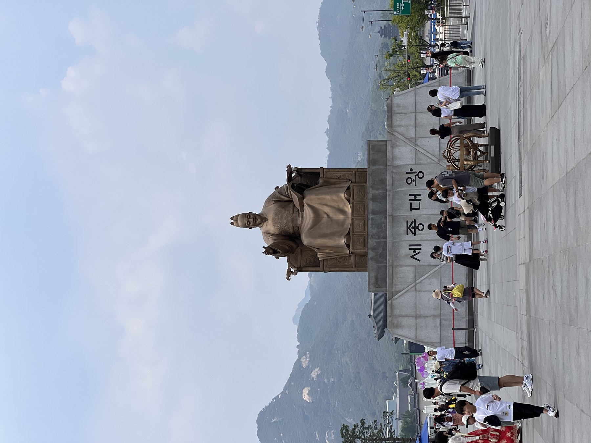
세종대왕 동상 · 광화문 광장 · 한 손에 책을 든 모습은 학문 군주의 표상이다 [Wikimedia · CC BY-SA]
II
1418년 · 경복궁
즉위 첫 해, 아버지의 그림자
강의 듣기
아버지는 보위를 아들에게 넘기고도 권력을 손에서 놓지 않았다. 그 사 년은 젊은 임금에게 견디기 힘든 시련이자, 가장 값진 정치 수업이었다.
즉위식의 화려함 뒤에는 기묘한 현실이 있었다. 1418년 8월, 스물두 살의 세종이 경복궁 근정전에서 즉위했으나, 상왕으로 물러난 태종이 군사권과 인사권의 핵심을 그대로 쥐고 있었다. 태종은 양위의 교서에서 군국의 중대사는 자신이 계속 처결하겠다고 명백히 밝혔다. 명목상의 임금과 실질적 권력자가 나뉜 이 이중 통치 구조는 태종이 세상을 떠나는 1422년까지 사 년간 이어졌다.
젊은 임금에게 이 시기는 인내의 학교였다. 그는 아버지의 결정을 거스르지 않으면서도 조용히 국정의 세부를 익혀 나갔다. 태종은 아들이 보는 앞에서 권력의 냉혹한 작동 원리를 가르쳤다. 그 가장 잔인한 교훈이 외척의 처리였다. 태종은 세종의 장인 심온이 군권 문제를 두고 불만을 품었다는 혐의를 잡아, 명에 다녀오던 그를 잡아들여 사사했다. 심씨 가문은 풍비박산이 났고, 세종의 장모는 관비로 떨어졌다.
이 사건 앞에서 신하들은 죄인의 딸이 된 소헌왕후 심씨를 폐출해야 한다고 거듭 아뢰었다. 그러나 세종은 흔들리지 않았다. 그는 아내를 끝까지 지켰고, 소헌왕후는 평생 그의 곁에서 여덟 아들과 두 딸을 낳으며 내조했다. 권력의 논리로 친정을 잃은 아내를 사랑으로 지켜 낸 이 선택은, 훗날 그가 백성을 대하는 태도와도 통하는 그의 깊은 인간됨을 보여 준다.
태종의 통치술은 잔혹했으나 전략적이었다. 그는 외척과 공신 세력을 미리 쳐 두어, 아들이 깨끗한 손으로 국정을 펼 수 있도록 길을 닦았다. 죽기 전 태종은 가뭄이 들자 하늘에 빌며, 자신이 죽어 비를 내릴 수 있다면 기꺼이 죽겠다고 했다는 일화가 전한다. 1422년 5월 그가 세상을 떠난 날 정말로 비가 내려, 사람들은 이를 태종우(太宗雨)라 불렀다.
내가 죽어 지각이 있다면, 반드시 이날에 비가 오게 하리라.
태종의 유언 (전승), 『연려실기술』
아버지가 떠난 뒤에야 세종은 비로소 온전한 임금이 되었다. 그는 아버지가 남긴 강력한 왕권과 안정된 재정을 물려받아, 그 힘을 칼이 아니라 책과 제도에 쏟아부었다. 한 사람의 위대한 업적은 결코 그 한 사람만의 것이 아니다. 태종의 피 묻은 준비가 세종의 빛나는 치세의 토대가 되었다는 사실은, 역사가 세대를 건너 이어지는 협업임을 일러 준다.
친정을 시작한 세종은 곧바로 자신만의 통치 방식을 드러냈다. 그 핵심이 토론이었다. 그는 중요한 사안마다 신하들에게 의견을 묻고, 자신과 생각이 다른 주장도 끝까지 듣고자 했다. 신하들이 침묵하면 오히려 그것을 책망했다. 임금이 모든 것을 안다고 자처하지 않고, 집단의 지혜를 모아 최선의 결정을 찾으려 한 이 태도는, 절대 권력을 쥔 군주로서는 보기 드문 것이었다. 세종의 위대한 업적들이 한 사람의 천재성만이 아니라 한 시대 인재들의 집단적 역량에서 나온 까닭이 여기 있다.
그가 도입한 또 하나의 제도가 의정부 서사제였다. 태종은 육조의 보고를 임금이 직접 받는 육조 직계제로 왕권을 강화했으나, 세종은 재상들이 먼저 정책을 심의해 임금에게 올리는 의정부 서사제로 일부 전환했다. 임금과 재상이 권력을 나누어 견제와 균형을 이루는 이 구조는, 세종이 자신의 권력을 스스로 제한할 줄 아는 군주였음을 보여 준다. 황희와 맹사성 같은 명재상이 오래 자리를 지킬 수 있었던 것도 이 제도 덕분이었다. 강한 왕권을 물려받고도 그것을 독재가 아니라 협치로 운용한 것, 그것이 세종 정치의 성숙함이었다.
세종의 통치를 떠받친 또 하나의 기둥은 백성을 향한 구체적인 정책들이었다. 그는 노비가 아이를 낳으면 산모에게 백 일의 출산 휴가를 주고, 남편에게도 한 달의 휴가를 주도록 명했다. 가장 낮은 신분인 노비에게까지 출산의 권리를 배려한 이 조치는, 당대 세계 어디에서도 찾기 어려운 것이었다. 또 그는 감옥의 위생을 챙기고, 더위와 추위에 죄수가 상하지 않도록 했으며, 고문으로 억울한 자가 나오지 않게 형벌 제도를 거듭 손질했다. 백성을 추상적인 대상이 아니라 살아 있는 한 사람 한 사람으로 본 것, 그것이 세종 통치의 바탕이었다.
세종의 세제 개혁은 그 백성 사랑을 제도로 옮긴 대표적 사례다. 그는 토지에 매기는 세금을 공정하게 하기 위해 무려 십수 년에 걸친 논의를 거쳤다. 토지의 비옥도를 여섯 등급으로 나누는 전분육등법과, 그해 농사의 풍흉을 아홉 등급으로 나누는 연분구등법을 만들어, 땅의 질과 작황에 따라 세금을 달리 매겼다. 더 놀라운 것은 이 새 법을 시행하기 전에 그가 전국의 관리와 백성 십칠만여 명에게 찬반을 물었다는 사실이다. 한 나라의 세법을 정하면서 백성의 뜻을 직접 물은 이 여론 조사는, 민본 정치의 가장 구체적인 실천이었다.
곁가지 3 — 세계 최초의 국민 여론 조사
1430년, 세종은 새 세법인 공법의 시행에 앞서 전국적으로 찬반 의견을 수렴했다. 그 결과 찬성 약 9만 8천여 명, 반대 약 7만 4천여 명이라는 구체적 수치가 『세종실록』에 기록되어 있다. 무려 십칠만여 명의 의견을 물은 이 일은, 흔히 세계 최초의 국민 여론 조사로 일컬어진다. 더욱이 세종은 찬성이 많았음에도 반대 의견을 무시하지 않고, 지역별 시범 시행을 거쳐 제도를 다듬어 갔다. 다수결에 안주하지 않고 소수의 우려까지 헤아린 신중함이 거기 있었다.
[Source] 『세종실록』 12년 3월·8월 · 오기수 『조선시대의 조세』 · 한국역사연구회.
이중 통치기 (1418~1422)
형식세종 즉위, 태종은 상왕
태종 보유 권력군사권·중대 인사권
심온 사사1418년 12월
소헌왕후폐출 논의를 세종이 거부
태종 승하1422년 5월 10일
세종 친정 개시1422년
곁가지 1 — 사위 앞에서 며느리 친정을 친 까닭
태종이 심온을 제거한 표면적 이유는 병권을 둘러싼 발언이었으나, 그 본질은 외척 견제였다. 태종 자신이 처가인 민씨 형제들을 차례로 죽인 전력이 있었다. 그는 강력한 외척이 어린 왕권을 위협한 역사를 누구보다 잘 알았고, 그래서 아들의 처가까지 미리 무너뜨렸다. 냉혹하지만 일관된 정치 철학이었다. 그 덕에 세종 치세에는 외척의 발호가 없었다. 다만 그 대가로 한 가문이 무너지고 한 여인이 평생 친정의 한을 안고 살아야 했으니, 권력의 안정은 늘 누군가의 희생 위에 세워졌다. 세종이 훗날 신분을 가리지 않고 인재를 쓰고 가장 낮은 자를 살핀 데에는, 권력의 잔혹함을 가장 가까이서 지켜본 이 젊은 날의 경험이 깔려 있었는지도 모른다.
[Source] 『세종실록』 즉위년 12월 · 한영우 『다시 찾는 우리역사』 · 한국민족문화대백과 '심온'.
곁가지 2 — 황희와 맹사성, 두 정승의 발탁
친정을 시작한 세종은 인재를 가렸다. 양녕 폐세자에 반대했던 황희를 끝내 다시 불러 영의정에 앉혔고, 청렴하고 음악에 밝은 맹사성을 좌의정으로 삼았다. 자신과 의견이 달랐던 인물조차 능력이 있으면 중용하는 이 포용은 세종 정치의 핵심이었다. 황희는 십팔 년간 영의정을 지내며 세종의 치세를 안에서 떠받쳤다.
[Source] 『세종실록』 · 『국조인물고』 · 한국학중앙연구원.
중국 (명)
영락제는 1421년 베이징 천도를 완성하고 자금성에 들었다. 환관 정화의 보선 함대는 동남아시아와 인도양, 아프리카 동해안까지 항해하며 조공 질서를 넓혔다. 조선은 명에 처녀와 환관, 매를 바치는 등 사대의 부담을 지면서도 책봉 체제 안에서 안정을 얻었다.
일본
쇼군 아시카가 요시모치 치세. 중앙 권력은 약화되고 슈고 다이묘들이 지방에서 세력을 키워 갔다. 쓰시마의 소씨 가문은 조선과의 무역과 왜구 통제 사이에서 줄타기를 했다.
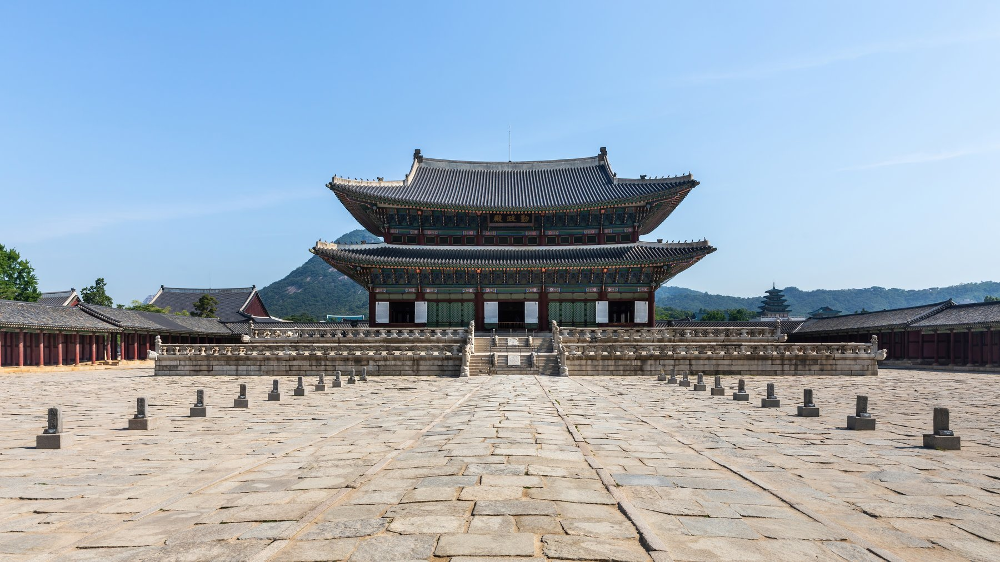
경복궁 근정전 · 세종이 즉위하고 친정을 펼친 정치의 무대 [Wikimedia · CC BY-SA]
III
1419-1427 · 한양
집현전, 한 학문의 자리
강의 듣기
임금이 궁궐 안에 학문의 집을 지었다. 그 집에 모인 젊은 학자들이 한 시대의 지성을 떠받쳤고, 끝내 한 민족의 글자를 빚어냈다.
세종이 친정을 펴기도 전인 1420년, 그는 경복궁 안에 집현전(集賢殿)을 설치했다. 어진 이를 모으는 전각이라는 이름 그대로였다. 집현전이라는 명칭 자체는 고려와 중국에도 있었으나, 세종은 그것을 단순한 자문기구가 아니라 국가의 학문과 정책을 생산하는 두뇌집단으로 키웠다. 정원은 처음 열 명 안팎에서 점차 늘었고, 재주 있는 젊은이들이 과거를 거쳐 이곳에 모였다.
세종이 집현전 학자들에게 준 가장 큰 선물은 시간과 자유였다. 그는 학자들에게 다른 잡무를 면제하고 오직 연구에만 몰두하게 했다. 가장 유명한 제도가 사가독서(賜暇讀書)다. 유능한 젊은 관리에게 휴가를 주어 집이나 절에서 마음껏 책을 읽게 한 일종의 유급 연구년이었다. 세종은 학자들에게 경연에서 자신과 토론하게 했고, 밤늦도록 글을 읽는 신하에게 어의를 벗어 덮어 주었다는 일화도 전한다.
집현전을 설치하고 문학하는 선비를 모아, 강론을 게을리하지 아니하며 고금의 일을 토론하니, 이로부터 문풍이 크게 일어났다.
세종실록 2년 3월
집현전은 단순한 도서관이 아니었다. 이곳에서 『고려사』가 편찬되고, 『농사직설』과 『향약집성방』 같은 실용 서적이 쏟아졌으며, 천문·역법·음악·지리·의학을 망라하는 국가 편찬 사업이 진행되었다. 세종 치세를 흔히 조선의 문예부흥기라 부르는데, 그 엔진이 바로 집현전이었다. 한 임금이 지식에 투자한 결과, 한 나라의 학문 수준 전체가 도약했다.
집현전의 사업 가운데 백성의 삶에 가장 가까이 닿은 것은 실용 서적이었다. 1429년 편찬된 『농사직설』은 조선의 풍토에 맞는 농법을 노인 농부들의 경험을 직접 수집해 정리한 책이다. 중국 농서를 베끼는 대신 우리 땅의 실제 농사를 기록했다는 점에서 혁신적이었다. 의학에서는 우리 산천에서 나는 약재로 병을 다스리는 『향약집성방』과, 동아시아 의학을 집대성한 방대한 『의방유취』가 편찬되었다. 윤리에서는 충신·효자·열녀의 이야기를 그림과 함께 엮은 『삼강행실도』가 나왔는데, 글을 모르는 백성도 그림으로 교화의 내용을 알 수 있게 한 배려였다. 이 그림책의 한계, 곧 백성이 글을 읽지 못한다는 문제의식이 훗날 훈민정음으로 이어졌다.
세종은 학자들을 가족처럼 아꼈다. 한 일화에 따르면, 어느 겨울밤 숙직하던 신숙주가 책을 읽다 잠들자, 세종이 자신의 어의를 벗어 그에게 덮어 주고 조용히 물러났다고 한다. 이튿날 잠에서 깬 신숙주가 임금의 옷이 자신을 덮고 있음을 알고 감격해 더욱 학문에 정진했다는 이야기다. 사실 여부를 떠나 이런 일화가 전한다는 것 자체가, 세종과 집현전 학자들 사이의 깊은 신뢰를 증언한다. 권위로 누르는 대신 마음으로 사람을 얻는 것, 그것이 세종이 인재를 부린 방식이었다.
집현전의 진정한 가치는 그곳에서 길러진 사람들이 한 시대의 모든 분야로 퍼져 나갔다는 데 있다. 천문을 맡은 이도, 역사를 쓴 이도, 의서를 엮은 이도, 글자를 다듬은 이도 모두 이 한 우물에서 길어 올린 인재였다. 세종은 한 사람을 한 가지 일에만 묶어 두지 않고, 여러 분야를 넘나들며 식견을 키우게 했다. 정인지는 역사와 천문과 훈민정음에 두루 참여했고, 신숙주는 외국어와 외교와 음운학을 겸했다. 한 분야의 전문가가 아니라 여러 분야를 꿰뚫는 통합적 지성을 길러 낸 것, 그것이 집현전이 한 시대의 문화를 동시에 여러 방향으로 밀어 올릴 수 있었던 비결이었다.
세종의 음악 정비도 집현전 못지않은 문화 사업이었다. 그는 음악이 단순한 즐거움이 아니라 나라의 질서와 백성의 마음을 다스리는 예(禮)의 근간이라 여겼다. 이를 위해 그는 박연이라는 음악 전문가를 등용했다. 박연은 흐트러진 아악을 바로잡고, 우리 실정에 맞는 악기를 제작했으며, 음의 기준이 되는 율관을 정비했다. 세종 자신도 음악에 조예가 깊어, 막대기로 땅을 두드려 박자를 일러 줄 정도였다고 전한다. 한 일화에 따르면 그는 새로 만든 편경의 소리 하나가 미세하게 어긋난 것을 귀로 잡아내, 살펴보니 과연 그 돌에 먹줄 자국이 덜 갈려 있었다고 한다.
이 집단에서 자란 인물들의 면면은 화려하다. 정인지, 신숙주, 성삼문, 박팽년, 이개, 하위지, 유성원, 최항, 강희안, 이선로. 이들 대부분이 훗날 훈민정음 창제와 해설 작업에 참여한다. 한 임금이 세운 작은 연구 공동체가 인류 문자사에 남을 위업의 산실이 된 것이다.
그러나 이 빛나는 공동체는 비극의 씨앗도 품고 있었다. 세종 사후, 손자 단종이 숙부 수양대군에게 보위를 빼앗기자 집현전 학자들은 둘로 갈렸다. 성삼문, 박팽년, 이개, 하위지, 유성원은 단종 복위를 꾀하다 처형되어 사육신이 되었다. 반면 신숙주와 정인지는 세조 편에 서서 공신이 되었다. 같은 스승 아래, 같은 글자를 함께 만든 벗들이 충절과 현실 사이에서 정반대의 길을 걸었다.
집현전이 낳은 것
설치1420년 (세종 2년)
핵심 제도사가독서, 경연
편찬고려사·농사직설·향약집성방·삼강행실도
대표 학자정인지·신숙주·성삼문·박팽년
훈민정음 해례집현전 8학사 참여
폐지1456년 세조, 사육신 사건 이후
곁가지 1 — 신숙주의 변절과 숙주나물
신숙주는 세종이 아낀 천재였다. 일본어·여진어·몽골어·중국어에 두루 능통해 외교의 달인으로 꼽혔고, 훈민정음 창제 때 명의 학자 황찬을 만나러 요동을 여러 차례 오갔다. 그러나 단종을 버리고 세조에 협력한 일로 후세에 변절자의 대명사가 되었다. 쉽게 쉬어 버리는 녹두나물을 숙주나물이라 부르게 된 것이 그의 변절을 빗댄 것이라는 속설이 있으나, 이는 후대의 민간어원일 뿐 확실한 근거는 없다.
[Source] 『세종실록』·『단종실록』 · 한국민족문화대백과 '신숙주' · 국립국어원 어원 자료.
곁가지 2 — 친제설과 협찬설
훈민정음을 누가 만들었는가를 두고 학계는 오래 논쟁해 왔다. 해례본 정인지 서문은 세종이 친히 만들었다고 명시하며, 실록도 임금이 친제했다고 적었다. 이것이 친제설이다. 반면 집현전 학자들의 집단 작업이었다는 협찬설도 있다. 다만 최만리의 반대 상소를 보면 핵심 학자들조차 창제 사실을 사후에야 알고 놀란 정황이 보여, 세종이 극소수와 비밀리에 주도했다는 친제설에 무게가 실린다. 둘째 딸 정의공주가 도왔다는 가전 기록도 있다.
[Source] 『훈민정음 해례본』 정인지 서 · 『세종실록』 25년 12월·26년 2월 · 안병희 『훈민정음 연구』.
중국 (명)
영락제 사후 인종·선종을 거치며 명은 안정기에 들었다. 선덕제 치세에 도자기와 회화 등 문화가 융성했으나, 정화의 항해는 막을 내리고 명은 점차 내향적 해금 정책으로 돌아섰다. 같은 동아시아 한자 문명권 안에서 조선은 독자적 문자를 모색하는 정반대의 길을 걷고 있었다.
유럽
1440년대 독일 마인츠에서 구텐베르크가 금속활자 인쇄술을 완성해 가고 있었다. 공교롭게도 조선에서는 이미 1234년 금속활자 기록이 있었고, 세종 대에는 갑인자라는 정교한 동활자로 책을 찍어 내고 있었다. 동서가 각기 지식 보급의 혁명을 준비하던 시대였다.
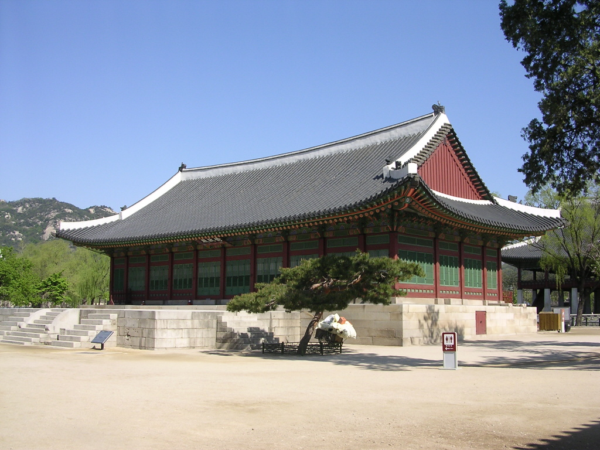
수정전(修政殿) · 옛 집현전 자리로 전한다 · 훈민정음이 다듬어진 학문의 작업실 [Wikimedia · CC BY-SA]
Tabula I · 즉위와 사대(事大)의 천하
1418년, 한 임금이 물려받은 동아시아 질서
조선 명·여진·일본 사대 사행로
세종이 물려받은 천하는 명을 중심으로 한 사대 질서였다. 그는 이 거대한 한자 문명권 안에 머물면서도, 끝내 그 질서로부터 독립한 자기 글자를 꿈꾸었다.
IV
1425-1442 · 한양
측우기와 자격루, 한 가지 과학
강의 듣기
한 임금이 하늘을 읽고자 했다. 그 곁에는 노비의 몸으로 태어난 천재가 있었다. 신분의 벽을 넘은 둘의 만남이 조선의 하늘에 별자리를 그렸다.
세종의 통치를 관통하는 한 가지 신념은, 백성의 삶을 떠받치는 것은 결국 정확한 지식이라는 것이었다. 농경 국가에서 가장 절실한 지식은 하늘이었다. 언제 비가 오고, 언제 씨를 뿌리며, 지금이 몇 시인가. 그때까지 조선은 명의 역법에 의존했으나, 베이징의 하늘과 한양의 하늘은 위도가 달라 일식과 절기 예측이 어긋났다. 세종은 조선의 하늘을 조선의 눈으로 보겠다고 결심했다.
그 결심을 손으로 옮긴 이가 장영실(蔣英實)이었다. 그는 동래현의 관노 출신이었다. 아버지는 원나라 또는 송나라계 귀화인이고 어머니는 관기였다고 전하니, 당대 신분 질서의 가장 낮은 자리에서 태어난 셈이다. 그러나 그의 손재주와 기계 감각은 비범했다. 세종은 그를 발탁해 상의원 별좌라는 벼슬을 내리려 했고, 신분을 문제 삼는 신하들의 반대를 무릅쓰고 끝내 그를 등용했다. 능력 앞에서 신분의 장벽을 거둔 파격이었다.
영실의 사람됨이 비단 공교할 뿐만 아니라 성품이 정교하여, 매양 강무할 때에는 나의 곁에 가까이 모시었다.
세종실록 15년 9월
세종은 천문 사업을 위해 정초·정인지에게 이론을 맡기고, 이천에게 제작을 총괄하게 했으며, 장영실을 그 핵심 기술자로 삼았다. 1432년부터 1438년에 걸쳐 경복궁 경회루 북쪽에 간의대(簡儀臺)라는 천문대가 세워졌다. 그 위에 대간의가 놓여 별의 위치를 측정했고, 혼천의와 혼상으로 천체의 운행을 본떴다. 이 사업의 결정체가 1442년 완성된 『칠정산(七政算)』이다. 해와 달과 다섯 행성의 운행을 한양 기준으로 계산한 이 역법서로, 조선은 자기 하늘을 스스로 계산하는 몇 안 되는 나라가 되었다.
『칠정산』의 의미는 단순한 기술적 성취를 넘어선다. 전통적으로 역법(달력)을 반포하는 것은 천자, 곧 중국 황제의 고유 권한이었다. 하늘의 질서를 정하고 시간을 다스리는 일은 천명을 받은 자만이 할 수 있다고 여겨졌기 때문이다. 제후국인 조선이 독자적으로 천체를 계산했다는 것은, 사대의 질서 안에서도 학문과 실용의 영역에서는 자주적 노선을 택했음을 의미한다. 조선은 명의 역법을 공식적으로는 받들면서도, 실제로는 한양의 하늘에 맞는 자기 계산을 가지고 있었던 것이다. 백성의 농사와 직결되는 일이기에, 세종은 명분보다 실용을 택했다.
세종 자신도 천문에 깊이 통달했다. 그는 신하들과 일식과 월식을 두고 토론했고, 예측이 빗나가면 그 원인을 따져 물었다. 한번은 일식 예보가 틀려 의식을 준비한 관리가 처벌받을 위기에 놓이자, 세종은 계산의 어려움을 헤아려 관대히 처분했다. 그는 과학을 단순히 신하들에게 맡겨 두는 군주가 아니라, 스스로 원리를 이해하고 함께 고민하는 군주였다. 임금이 직접 지식의 최전선에 서 있었기에, 그 시대의 과학은 형식이 아니라 살아 있는 탐구가 될 수 있었다.
세종 시대 인쇄술의 발전도 같은 맥락에 있었다. 1434년 주조된 동활자 갑인자는 글자 모양이 반듯하고 인쇄가 빨라, 이전보다 훨씬 많은 책을 정확히 찍어 낼 수 있었다. 활자를 고정하는 방식을 밀랍에서 단단한 조립식으로 개선해 인쇄의 정밀도까지 높였다. 좋은 책을 많이, 정확하게 찍는 일은 곧 지식을 널리 퍼뜨리는 일이었다. 세종에게 인쇄술은 그 자체가 목적이 아니라, 학문의 성과를 백성과 후세에 전하는 통로였다. 천문대에서 측량한 하늘과, 활자로 찍어 낸 책과, 백성이 읽을 새 글자가 모두 하나의 목표, 곧 지식을 백성에게 돌려주는 일로 이어져 있었다.
세종은 음악도 통치의 한 영역으로 보았다. 그는 음악이 단순한 즐거움이 아니라 나라의 질서와 백성의 마음을 다스리는 예(禮)의 근간이라 여겼다. 그래서 음률에 밝은 박연을 등용해 흐트러진 아악을 바로잡고, 우리 실정에 맞는 악기를 만들며, 음의 기준이 되는 율관을 정비하게 했다. 세종 자신도 음악에 조예가 깊었다. 한 일화에 따르면 그는 새로 만든 편경 가운데 소리 하나가 미세하게 어긋난 것을 귀로 잡아냈고, 살펴보니 과연 그 돌에 먹줄 자국이 덜 갈려 있었다고 한다. 하늘과 땅과 소리까지, 그의 탐구는 백성의 삶을 둘러싼 모든 질서에 미쳤다.
세종 시대의 과학이 오늘 더욱 빛나 보이는 까닭은, 그것이 한 천재의 고립된 성취가 아니라 임금과 학자와 장인이 함께 이룬 협업의 결과였기 때문이다. 이론을 세운 정초와 정인지, 제작을 총괄한 이천, 핵심 기술을 맡은 장영실, 그리고 이 모든 것을 끌어모은 세종. 신분과 전공이 다른 이들이 한 목표 아래 모였을 때 어떤 일이 가능한지를, 세종 시대 과학은 보여 주었다. 노비 출신 장영실이 임금의 곁에서 천문 기구를 만들 수 있었던 그 짧은 시기는, 조선의 엄격한 신분제가 잠시 열렸던 예외의 순간이자, 능력이 신분을 넘어설 때 무엇이 가능한지를 증명한 빛나는 사례였다.
세종이 발명품에 쏟은 관심은 그것이 백성에게 실제로 닿는가에 늘 머물러 있었다. 그는 측우기를 전국 고을에 보내 강우량을 보고받게 했고, 앙부일구를 궁궐이 아니라 사람이 붐비는 길목에 두었으며, 글을 모르는 백성을 위해 해시계에 동물 그림을 새기게 했다. 아무리 정교한 도구라도 백성의 손이 닿지 않으면 소용이 없다는 것을, 그는 분명히 알았다. 과학을 권력의 장식이 아니라 백성의 도구로 만든 이 태도가, 세종 시대 발명품들이 박물관의 유물이 아니라 한 시대 사람들의 삶 속에서 실제로 작동했던 까닭이다.
한 시대를 평가하는 가장 정직한 척도는, 그 시대가 가장 약한 사람들을 어떻게 대했는가다. 그 척도로 보면 세종의 치세는 우뚝하다. 노비에게 출산 휴가를 주고, 죄수의 처지를 살피고, 글 모르는 백성을 위해 글자를 만든 임금. 그가 남긴 모든 업적은 결국 한 방향을 가리킨다. 가장 낮은 곳을 향한 시선이다. 그것이 오백 년이 지난 지금도 그의 이름이 빛바래지 않는 단 하나의 이유다.
세종이 다스린 삼십이 년은 조선 오백 년 역사에서 가장 안정되고 풍요로웠던 시기로 꼽힌다. 그러나 그가 오늘까지 사랑받는 까닭은 그 풍요 자체가 아니라, 그 풍요를 무엇에 썼는가에 있다. 그는 나라가 강해진 힘을 백성을 더 깊이 살피는 데 썼고, 학문이 무르익은 성과를 백성과 나누는 데 썼다. 한 시대의 모든 빛을 가장 어두운 곳을 비추는 데 모은 것, 그것이 세종 치세의 본질이었다. 그렇기에 그의 이야기는 한 임금의 전기를 넘어, 권력과 지식과 사랑이 어떻게 한 사람 안에서 만날 수 있는가에 관한 영원한 물음으로 남는다.
세종을 기억한다는 것은 단지 한 위인을 우러르는 일이 아니다. 그것은 우리 자신에게 묻는 일이기도 하다. 우리가 가진 작은 권한과 능력을, 우리는 무엇을 위해 쓰고 있는가. 가장 가까운 사람의 가장 작은 불편을, 우리는 우리 자신의 일로 끌어안고 있는가. 세종은 가장 높은 자리에서 그 물음에 평생으로 답했다. 그 답이 오늘 우리가 매일 쓰는 글자 속에, 그리고 가장 약한 자를 먼저 생각하라는 한마디 가르침 속에 여전히 살아 숨 쉰다. 한 임금이 백성을 가엾이 여겨 시작한 일은, 이렇게 아직 끝나지 않았다.
측우기(測雨器)는 그 과학 정신이 백성에게 가장 가까이 닿은 발명이었다. 1441년 세자(훗날 문종)의 제안으로 시작되어 이듬해 규격이 표준화된 이 빗물 측정기는, 일정한 크기의 쇠 그릇에 고인 빗물의 깊이를 자로 재어 강우량을 수치로 기록했다. 전국 각 고을에 같은 규격을 배포해 비의 양을 비교한 이 체계는 세계 최초의 표준화된 우량 관측망이었다. 유럽에서 비슷한 우량계가 나온 것은 약 이백 년 뒤였다.
측우기가 위대한 까닭은 그것이 한 발명품이 아니라 한 행정 체계였다는 데 있다. 같은 규격의 측정기를 전국에 보내 각 지방의 강우량을 수치로 보고받음으로써, 조선은 가뭄과 홍수를 객관적 데이터로 파악할 수 있게 되었다. 이는 농사의 풍흉을 예측하고 세금을 공정하게 매기는 일과 직결되었다. 세종에게 과학은 호기심의 유희가 아니라 백성의 삶을 떠받치는 통치의 도구였다. 빗물의 깊이를 재는 작은 쇠그릇 하나가, 한 나라의 농정을 추측에서 측정으로 바꾸어 놓은 것이다.
자격루(自擊漏)는 장영실 공학의 절정이었다. 1434년 완성된 이 자동 물시계는, 물의 흐름으로 시간을 재되, 정해진 시각이 되면 기계 장치가 스스로 인형을 움직여 종과 북과 징을 울렸다. 사람이 지키지 않아도 시간을 알리는, 동아시아 자동 기계의 걸작이었다. 같은 시기 종로에는 해시계 앙부일구(仰釜日晷)가 설치되었다. 솥처럼 오목한 면에 그림자로 시각과 절기를 함께 읽는 이 시계는, 글을 모르는 백성도 그림으로 때를 알 수 있도록 동물 그림을 새긴 백성의 시계였다.
한 사람의 깊은 관심이 한 시대 전체의 수준을 끌어올린다. 세종의 호기심은 천문·기상·인쇄·금속·의학으로 번져 나갔다. 갑인자라는 정교한 동활자가 주조되어 책의 대량 보급을 가능케 했고, 『향약집성방』과 『의방유취』가 조선의 의학을 집대성했다. 그러나 그 빛에도 그늘은 있었다. 1442년 장영실이 감독한 임금의 가마가 부서지는 사고가 일어나자, 그는 곤장을 맞고 파직되었으며 이후 기록에서 홀연히 사라진다. 신분을 넘어 등용된 천재의 말년이 어떤 것이었는지, 역사는 끝내 침묵한다.
세종 시대 과학의 결실
간의대1438년, 경복궁 천문대
칠정산1442년, 한양 기준 역법
측우기1441~1442년, 세계 최초 표준 우량계
자격루1434년, 자동 물시계
앙부일구1434년, 오목 해시계
갑인자1434년, 동활자
혼천의·혼상천체 운행 측정·재현
곁가지 1 — 사라진 천재 장영실
1442년, 장영실이 만든 임금의 안여(가마)가 거둥 중에 부서졌다. 의금부는 그에게 곤장 백 대를 청했고, 세종은 한 등급 감해 시행케 했다. 그 후 장영실의 이름은 실록에서 완전히 사라진다. 어디서 어떻게 생을 마쳤는지 기록이 없다. 가장 아꼈던 기술자를 끝내 보호하지 못한 것인지, 더 큰 정치적 사정이 있었던 것인지는 수수께끼로 남았다. 신분의 벽을 넘어선 천재의 결말이 침묵으로 끝난 것은, 조선 신분제의 완강함을 역설적으로 증언한다.
앙부일구가 특별한 까닭은 그 설치 장소와 디자인에 있다. 세종은 이 해시계를 궁궐이 아니라 혜정교와 종묘 앞 등 사람이 많이 다니는 길목에 두게 했다. 그리고 글을 모르는 백성을 위해 시각을 나타내는 자리에 쥐·소·범 등 십이지 동물 그림을 새겼다. 시간을 아는 일조차 백성과 나누려 한 이 배려는, 몇 해 뒤 글자를 백성과 나누려 한 훈민정음의 정신과 정확히 같은 뿌리에서 나왔다.
[Source] 『세종실록』 16년 10월 · 국립고궁박물관 천문기기 해설.
중국 (명)
명의 역법인 대통력은 원의 수시력을 거의 그대로 쓰고 있었다. 조선의 『칠정산』은 이 중국 역법과 아라비아 회회력을 함께 연구해 한양의 위도에 맞게 재계산한 것으로, 사대 질서 안에서도 천문만큼은 독자 노선을 걸은 사례였다.
이슬람권
중앙아시아 사마르칸트에서는 티무르의 손자 울루그 베그가 거대한 천문대를 세우고 정밀한 별 목록을 작성하고 있었다. 동아시아의 한양과 중앙아시아의 사마르칸트에서, 거의 같은 시기에 두 군주가 하늘을 측량하고 있었다.
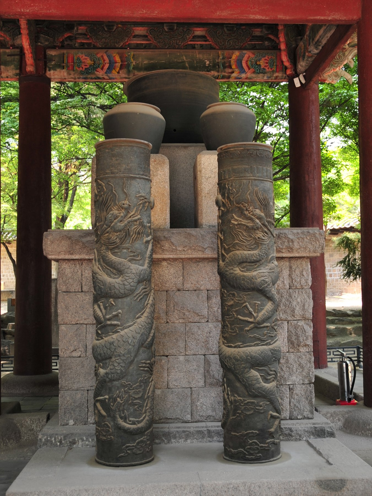
자격루(보루각루) · 장영실 등이 만든 자동 물시계의 복원품 · 1434년 경복궁 보루각 설치 [Wikimedia · CC BY-SA]
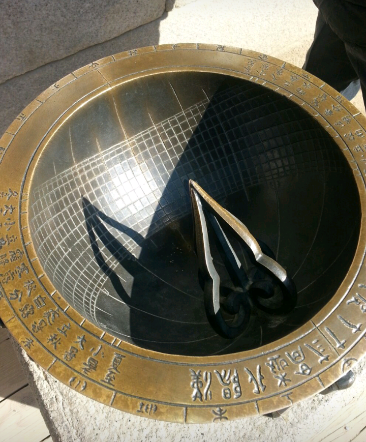
앙부일구 · 솥처럼 오목한 면에 그림자로 시각과 절기를 함께 읽는 해시계 [Wikimedia · Public Domain]
V
1419 · 대마도, 1433-1443 · 압록강·두만강
대마도 정벌과 사군육진
강의 듣기
붓을 든 임금의 다른 손에는 칼이 있었다. 그는 남으로 왜구의 소굴을 치고, 북으로 강을 따라 국경을 그었다. 오늘 우리가 아는 한반도의 윤곽은 그의 시대에 완성되었다.
세종은 학문 군주로 기억되지만, 그의 치세는 조선 역사상 가장 단호한 영토 경영의 시기이기도 했다. 그 첫 신호가 즉위 이듬해인 1419년의 대마도 정벌, 곧 기해동정이었다. 쓰시마(대마도)는 본토와 조선 사이의 척박한 섬으로, 농사지을 땅이 부족한 그곳 사람들은 오래도록 왜구가 되어 조선과 명의 해안을 약탈했다. 이해 봄 왜선 수십 척이 충청도 비인현을 노략질하자, 상왕 태종과 세종은 응징을 결심했다.
삼군도체찰사 이종무가 병선 227척과 군사 1만 7천여 명을 이끌고 거제도를 출발해 쓰시마로 향했다. 조선군은 섬에 상륙해 적선을 불태우고 가옥을 부수었으며, 포로로 잡혀 있던 조선인과 명나라 사람들을 구출했다. 약 보름의 작전 끝에 쓰시마의 도주 소 사다모리는 항복하고 조공을 약속했다. 이후 조선은 무력과 회유를 병행했다. 삼포를 열어 제한된 무역을 허용하되, 도주를 통해 왜구를 통제하는 기미 정책으로 남쪽 바다의 평화를 사들였다.
세종의 대외 정책에는 일관된 원칙이 있었다. 먼저 압도적 무력으로 응징하되, 그 다음에는 길을 열어 공존을 꾀하는 것이다. 쓰시마를 정벌해 왜구의 기세를 꺾은 뒤, 그는 부산포·제포·염포의 삼포를 열어 일본과의 합법적 무역을 허용했다. 약탈로 살아가던 자들에게 약탈하지 않고도 살아갈 길을 열어 준 것이다. 채찍과 당근을 함께 쓴 이 현실적 외교는, 무력만으로도 회유만으로도 변경의 평화를 지킬 수 없음을 꿰뚫어 본 결과였다. 강함과 너그러움의 균형, 그것이 세종 변방 정책의 요체였다.
대마도 정벌에는 한 가지 미묘한 정치도 얽혀 있었다. 당시 명나라도 왜구에 시달리고 있었기에, 조선의 정벌은 명에 대한 사대의 성의를 보이는 의미도 있었다. 그러나 조선은 정벌 후 쓰시마를 명에 넘기지 않고 독자적으로 일본과의 관계를 관리했다. 사대의 명분을 지키면서도 실리는 스스로 챙긴 것이다. 세종의 외교는 늘 이런 두 겹의 계산 위에 있었다. 큰 이웃에게는 예를 다하되, 자기 나라의 이익이 걸린 곳에서는 결코 주도권을 놓지 않았다. 약소국이 강대국 사이에서 살아남는 지혜가 거기 있었다.
북방 육진을 지킨 김종서의 이야기는 세종 시대 인재 활용의 한 전형이다. 본래 대간으로 임금에게 직언하던 문신 김종서를, 세종은 변방의 군사 지휘관으로 발탁했다. 붓을 쥐던 신하에게 칼을 맡긴 파격이었다. 김종서는 십 년 가까이 두만강 변에서 여진과 추위를 상대하며 여섯 진을 세웠고, 그 강인함으로 백두산 호랑이라는 별명을 얻었다. 세종은 적임자라 판단하면 출신이나 전공을 가리지 않고 중책을 맡겼고, 한번 맡기면 끝까지 믿고 지원했다. 인재를 알아보는 눈과 한번 믿으면 흔들리지 않는 신뢰가, 그의 시대를 떠받친 보이지 않는 힘이었다.
세종 시대의 영토 경영은 단순히 땅을 넓힌 데서 끝나지 않았다. 그는 새로 얻은 변방에 행정 체계를 세우고, 백성을 이주시켜 정착시키며, 여진과의 교역로를 관리하는 등 통치의 그물을 촘촘히 짰다. 정복과 통치는 다른 일이다. 칼로 얻은 땅을 제도로 다스려 진정한 나라의 일부로 만든 것, 그것이 세종 강역 정책의 완성도였다. 오늘날 압록강과 두만강이 한반도의 자연스러운 북쪽 경계로 여겨지는 것은, 이 시기에 군사적 진출과 행정적 정착이 함께 이루어진 결과다.
곁가지 3 — 화포를 기록으로 남긴 까닭
세종은 화약 무기의 제작법을 『총통등록』이라는 책으로 정리하게 했다. 무기의 규격과 화약의 배합, 발사 방법까지 그림과 함께 기록한 이 책은, 한 장인의 손끝에 머물던 기술을 문서로 옮겨 다음 세대로 전수되게 한 것이다. 기술을 비밀로 감추지 않고 체계적으로 기록한 이 발상은, 세종이 지식을 사사로운 것이 아니라 나라의 공적 자산으로 보았음을 보여 준다. 다만 이 책은 군사 기밀이었기에 엄격히 관리되었고, 후대에 일부가 유실되었다.
[Source] 『총통등록』(1448) · 『세종실록』 30년 9월 · 채연석 『한국초기화기연구』.
북쪽 변경의 사업은 더 길고 더 컸다. 세종은 압록강과 두만강을 조선의 자연 국경으로 확정하고자 했다. 압록강 상류에 사군(四郡)을, 두만강 유역에 육진(六鎭)을 설치하는 대역사였다. 두만강 방면은 명장 김종서가 맡았다. 그는 함길도 절제사로 부임해 여진을 다스리고 종성·온성·회령·경원·경흥·부령의 여섯 진을 세웠다. 압록강 방면은 최윤덕이 여진 정벌을 거쳐 여연·자성·무창·우예의 네 군을 두었다.
두만강으로 경계를 삼으니, 이는 하늘이 만든 험지요 조종이 물려준 강토라. 어찌 한 자의 땅인들 가벼이 버리리오.
세종실록, 북방 개척 논의 (요지)
이 개척은 단순한 정복이 아니라 사람을 옮겨 심는 사민(徙民) 정책이었다. 세종은 남쪽의 백성을 북방으로 이주시켜 빈 땅을 채우고, 여진과는 무역과 회유로 공존을 꾀했다. 오늘 우리가 지도에서 보는 한반도 북쪽 국경선, 곧 압록강과 두만강을 따라 그어진 그 선이 바로 이때 확정되었다. 한 임금의 군사적 결단이 한 나라의 몸의 윤곽을 완성한 것이다.
북방 개척의 진정한 어려움은 정복이 아니라 정착에 있었다. 추위와 척박함, 그리고 여진의 위협 때문에 사람들은 그 땅에 살기를 꺼렸다. 세종은 남쪽 도의 백성을 강제로 이주시키는 사민 정책을 폈고, 이주민에게 토지와 관직의 기회를 주어 정착을 유도했다. 죄를 지은 자를 변방으로 보내 채우기도 했다. 이 정책은 백성에게 큰 고통을 주었으나, 빈 국경은 곧 적에게 열린 문이라는 냉정한 인식의 산물이었다. 땅을 얻는 것보다 그 땅에 사람을 심어 지키는 일이 더 어렵고 더 중요하다는 것을, 세종은 알고 있었다.
세종의 강역 정책은 그의 통치 철학을 압축해 보여 준다. 그는 결코 호전적인 군주가 아니었다. 그러나 백성의 안전과 나라의 근간이 걸린 일에는 단호했다. 학문과 예악을 숭상하면서도 국방을 소홀히 하지 않았고, 평화를 사랑하면서도 평화를 지킬 힘을 길렀다. 붓과 칼을 한 손에 쥔 이 균형이야말로, 그의 치세가 한낱 이상주의에 그치지 않고 실제 백성의 삶을 지켜 낸 비결이었다.
세종의 국방 정책은 제도와 인재의 결합이었다. 그는 김종서와 최윤덕 같은 유능한 장수에게 변방의 전권을 맡기되, 그들의 보고를 꼼꼼히 검토하고 필요한 지원을 아끼지 않았다. 화약 무기의 개발을 독려해 군기감에서 총통과 화포를 끊임없이 개량하게 했고, 그 규격을 문서로 표준화했다. 무기의 제작법을 기록으로 남긴 것은, 한 사람의 기술이 사장되지 않고 다음 세대로 전수되게 하려는 배려였다. 과학을 농사와 천문에만 쓴 것이 아니라 나라를 지키는 일에도 빈틈없이 적용한 것이다.
그러나 세종은 결코 정복욕에 사로잡힌 군주가 아니었다. 그의 모든 군사 행동은 방어와 안정을 위한 것이었다. 그는 백성을 전쟁으로 내모는 것을 깊이 경계했고, 변방의 군역이 백성에게 주는 고통을 늘 염려했다. 사군의 일부는 후대에 방어가 어렵다는 이유로 철수되기도 했는데, 이는 영토 욕심보다 백성의 부담을 우선한 현실적 판단이었다. 힘을 기르되 그 힘을 함부로 쓰지 않는 절제, 그것이 세종이 칼을 다룬 방식이었다.
세종의 위대함은 문과 무 어느 한쪽으로 기울지 않은 균형에 있었다. 그는 군사 기술에도 투자했다. 화약 무기 개발이 이어져, 여러 발의 화살을 동시에 쏘아 보내는 로켓형 무기 신기전과 그 발사대인 화차가 만들어졌다. 글자를 만든 손과 국경을 그은 손이 한 사람의 것이었다는 사실은, 세종의 치세가 이상과 현실을 함께 끌어안았음을 보여 준다.
세종의 국방·영토
대마도 정벌1419년, 이종무
병력병선 227척·군사 1만 7천여
육진김종서, 두만강 (회령·경원 등)
사군최윤덕, 압록강 상류 (여연 등)
정책사민·기미(羈縻)·삼포 개항
화약 무기신기전·화차 개발
곁가지 1 — 백두산 호랑이 김종서
김종서는 본래 문관이었으나 북방 개척의 중책을 맡아 여진과 추위를 상대하며 육진을 세웠다. 그 강인함에 사람들은 그를 대호(大虎), 곧 백두산 호랑이라 불렀다. 한 일화에 따르면 그가 변방에서 잔치를 열던 중 적의 화살이 술상에 꽂혔으나, 그는 낯빛 하나 변하지 않고 술을 마저 들었다고 한다. 그러나 이 강골의 명장도 세종 사후 단종을 보필하다 수양대군의 철퇴에 맞아 계유정난의 첫 희생자가 되었다.
세종 대에 정비된 신기전은 화살 끝에 화약통을 달아 추진력으로 날려 보내는 로켓형 무기였다. 그 설계는 1448년 편찬된 『총통등록』에 규격까지 기록되어, 세계에서 가장 오래된 로켓 설계도 가운데 하나로 꼽힌다. 화차는 한 번에 백 발의 신기전이나 총통을 발사하는 이동식 발사대로, 훗날 임진왜란의 행주대첩에서 권율이 활용해 큰 전과를 올렸다.
[Source] 『총통등록』(1448) · 국방부 군사편찬연구소 · 채연석 『한국초기화기연구』.
여진 (만주)
두만강 북쪽의 여진 부족들은 통일된 세력이 아니라 여러 부족으로 나뉘어 있었다. 조선은 이들을 정벌과 회유로 다스리며 변경을 안정시켰다. 이 여진의 후예가 이백여 년 뒤 누르하치 아래 통일되어 후금, 곧 청을 세우고 조선을 침공하게 된다.
일본
쓰시마는 조선과 일본 본토 사이의 중개 무역으로 살아가는 섬이었다. 조선은 도주에게 관직과 무역권을 주어 왜구를 단속하게 하는 이이제이의 외교를 폈다. 이 질서는 1510년 삼포왜란으로 흔들릴 때까지 한 세기 가까이 남해의 평화를 지탱했다.
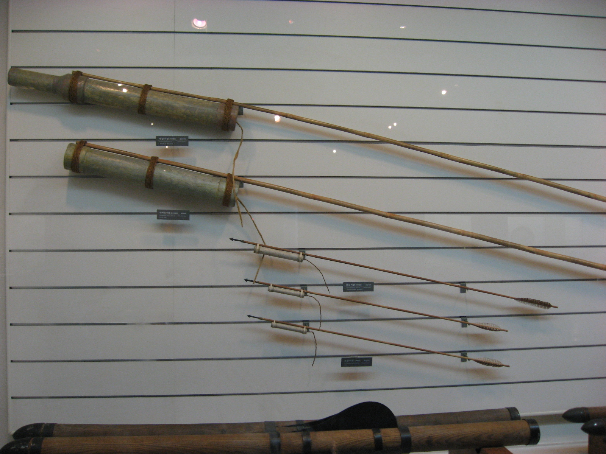
신기전기 화차 · 한 번에 백 발의 로켓 화살을 발사하는 이동식 발사대 [Wikimedia · Public Domain]
Tabula II · 사군육진과 대마도 정벌
남으로 칼을, 북으로 강계를 — 한반도의 윤곽이 완성되다
조선 신개척 북방 강계·진출로 대마도 정벌
남으로 왜구의 소굴을 치고 북으로 두 강을 따라 진을 세우니, 한반도의 북쪽 국경이 비로소 압록강과 두만강에 닿았다. 오늘의 지도 한 장이 그의 시대에 그려졌다.
VI
1443-1446 · 한양
훈민정음 — 한 글자의 탄생
강의 듣기
한 임금이 백성의 말을 들었다. 그러나 그 말을 담을 그릇이 없었다. 그래서 그는 그릇을 직접 빚었다. 스물여덟 개의 글자, 인류 문자사에서 유일하게 만든 이와 만든 날과 만든 원리가 모두 알려진 문자가 태어났다.
세종의 모든 업적 가운데 으뜸은 단연 훈민정음(訓民正音)의 창제다. 1443년 음력 12월, 『세종실록』은 짧지만 무게 있는 한 문장으로 이 사건을 기록한다. 이달에 임금이 친히 언문 스물여덟 자를 지었다. 그뿐이다. 어떤 위원회도, 어떤 칙령의 행렬도 없이, 한 임금이 조용히 새 글자를 완성해 세상에 내놓았다. 세계 문자의 역사에서 한 통치자가 직접, 그리고 의도적으로 새 문자 체계를 설계해 반포한 예는 거의 없다.
왜 새 글자가 필요했는가. 조선의 공식 문자는 한자였다. 한자는 뜻글자여서 수천 자를 따로 외워야 했고, 그 학습에는 오랜 세월과 비용이 들었다. 게다가 우리말의 어순과 토씨는 중국어와 달라, 한자만으로는 우리말을 온전히 적을 수 없었다. 이두와 향찰 같은 차자 표기가 있었으나 불완전하고 복잡했다. 결국 글을 아는 일은 지배층의 특권이었고, 백성 대다수는 억울한 일을 당해도 글로 호소할 수 없었다. 문자가 곧 권력이고 불평등이었다.
이 불평등은 추상적인 문제가 아니었다. 송사에 휘말린 백성이 자기 처지를 글로 적어 호소할 수 없어 억울하게 형벌을 받는 일이 흔했다. 관리가 문서를 조작해도 글을 모르는 백성은 알아챌 수 없었다. 부모가 자식에게 편지 한 장 남길 수 없었고, 먼 곳의 가족과 소식을 주고받을 수 없었다. 세종은 이 모든 것을 백성의 삶에 대한 구체적 결핍으로 보았다. 그가 만들려 한 것은 학자들의 새 도구가 아니라, 가장 낮은 자가 자기 뜻을 펼 수 있는 권리였다.
세종이 글자를 만들기 위해 쏟은 노력은 상상을 초월한다. 그는 중국의 음운학 서적인 운서를 깊이 연구했고, 우리말 소리의 체계를 음소 단위까지 분석했다. 명나라 한림학사 황찬이 요동에 유배되어 있다는 소식을 듣고, 신숙주와 성삼문을 열세 차례나 요동으로 보내 음운에 관해 자문을 구했다는 기록도 전한다. 한 임금이 한 글자를 완성하기 위해 당대 최고의 학문을 총동원한 것이다. 단순해 보이는 스물여덟 글자 뒤에는, 수년에 걸친 치밀한 언어학적 탐구가 숨어 있었다.
세종은 이 불평등을 자신의 문제로 끌어안았다. 훈민정음 언해본 첫머리에 실린 어제 서문은, 동아시아 군주의 글로는 유례없이 백성을 향한 연민에서 출발한다.
나랏말이 중국과 달라 문자와 서로 통하지 아니하니, 이런 까닭으로 어리석은 백성이 이르고자 할 바가 있어도 마침내 제 뜻을 능히 펴지 못하는 이가 많다. 내 이를 위하여 가엾이 여겨, 새로 스물여덟 자를 만드노니, 사람마다 하여금 쉬이 익혀 날로 씀에 편안케 하고자 할 따름이니라.
훈민정음 언해본, 어제 서문
이 글자가 경이로운 것은 그 설계의 과학성이다. 1446년에 간행된 해설서 『훈민정음 해례본』은 글자를 만든 원리를 낱낱이 밝힌다. 자음의 기본자 ㄱ ㄴ ㅁ ㅅ ㅇ은 그 소리를 낼 때의 발음 기관 모양을 본떴다. ㄱ은 혀뿌리가 목구멍을 막는 모양, ㄴ은 혀가 윗잇몸에 닿는 모양, ㅁ은 입의 모양, ㅅ은 이의 모양, ㅇ은 목구멍의 모양이다. 여기에 획을 더해 거센소리를 만들었으니, ㄱ에 획을 더하면 ㅋ이 된다. 발음 기관을 본떠 글자를 만든다는 발상은 세계 어느 문자에도 없는 것이었다.
모음은 더 철학적이다. 기본 세 글자가 동양의 우주관인 삼재(三才)에서 나왔다. 둥근 점 ·는 하늘(天)을, 평평한 ㅡ는 땅(地)을, 곧게 선 ㅣ는 사람(人)을 상징한다. 이 셋을 조합해 ㅗ ㅏ ㅜ ㅓ 같은 모음을 만들어 내니, 음양의 조화가 글자의 형태에 담겼다. 과학과 철학, 음운학과 미학이 한 글자에 융합된 것이다. 자음과 모음을 모아쓰는 방식은 음절 단위로 모이면서도 음소를 정확히 분석하는, 표음문자의 한 정점이었다.
훈민정음은 인류 문자사에서 전무후무한 사건이었다. 세계의 거의 모든 문자는 그림에서 출발해 수백 수천 년에 걸쳐 서서히 변형되며 만들어졌다. 만든 이도, 만든 때도, 만든 원리도 알 수 없는 것이 보통이다. 그러나 한글은 만든 사람과 만든 날과 만든 원리가 모두 기록으로 남아 있는, 유일한 문자다. 그것도 한 개인의 자의적 발명이 아니라 음운학의 정밀한 분석 위에 세워진 과학적 설계였다. 이 사실 하나만으로도 훈민정음은 인류 지성사의 경이로 꼽힐 만하다.
해례본의 정인지 서문은 이 글자가 슬기로운 사람은 하루아침에, 어리석은 사람도 열흘이면 깨칠 수 있다고 자랑했다. 수천 자의 한자를 외우는 데 평생이 걸리던 것에 비하면 혁명적인 단순함이었다. 스물여덟 개의 자모를 조합하면 우리말의 거의 모든 소리를 적을 수 있었고, 해례본은 바람 소리와 학의 울음, 닭 우는 소리와 개 짖는 소리까지 적을 수 있다고 했다. 적은 수의 기호로 무한한 소리를 표현하는 이 경제성이야말로 표음문자의 이상이었다.
흥미롭게도 세종은 자신의 창조물을 결코 강요하지 않았다. 그는 한자를 폐지하지 않았고, 한글을 공문서의 필수 문자로 강제하지도 않았다. 그저 백성이 쓸 수 있는 길 하나를 열어 두었을 뿐, 그 길을 걸을지 말지는 백성의 선택에 맡겼다. 위에서 내리누른 제도가 아니라 아래에서 선택받은 도구였기에, 한글은 왕조가 무너진 뒤에도 살아남을 수 있었다. 강요된 것은 권력과 함께 사라지지만, 사랑받은 것은 권력보다 오래 남는다.
1446년 음력 9월(양력 10월 9일)에 해례본이 완성되어 반포되었다. 정인지·신숙주·성삼문·박팽년·이개·이선로·강희안·최항 등 집현전 학자들이 해설과 용례를 붙였다. 오늘 한국은 이날을 한글날로 기려, 한 임금이 백성에게 글을 돌려준 결단을 해마다 기념한다. 그가 만든 것은 단순한 부호 체계가 아니라, 백성이 자기 뜻을 펼 권리 그 자체였다.
훈민정음의 설계
창제1443년 12월 (친제)
반포1446년 10월 9일 (해례본)
글자 수28자 (자음 17·모음 11)
자음 원리발음 기관 상형 + 가획
모음 원리천(·)·지(ㅡ)·인(ㅣ) 삼재
해례 참여집현전 8학사
국보·세계기록유산국보 70호, 유네스코(1997)
곁가지 1 — 발음 기관을 본뜬 글자
훈민정음의 자음이 발음 기관의 모양을 본떴다는 사실은 오랫동안 추측에 머물다, 1940년 안동에서 『훈민정음 해례본』 원본이 발견되면서 비로소 확증되었다. 해례의 제자해는 어금닛소리 ㄱ은 혀뿌리가 목구멍을 막는 꼴을 본떴다고 분명히 적고 있다. 영국의 언어학자 제프리 샘슨은 이처럼 글자의 형태가 그 소리의 조음 방식을 반영하는 문자를 자질문자라 이름 붙이고, 훈민정음을 그 유일한 사례로 꼽았다.
해례본은 반포 후 오백 년 가까이 행방이 묘연했다. 그래서 한동안 자음이 옛 한자나 몽골 파스파 문자를 본떴다는 억측까지 나돌았다. 그러다 1940년, 경북 안동의 한 고택에서 원본 한 부가 발견되었다. 간송 전형필이 거금을 들여 이를 사들여 지켰고, 한국전쟁 때는 이 책만은 품고 피란했다고 전한다. 이 한 권 덕분에 우리는 글자가 만들어진 원리를 만든 이의 말로 직접 들을 수 있게 되었다.
[Source] 간송미술문화재단 · 한국민족문화대백과 '훈민정음 해례본' · 국보 제70호 지정 자료.
유럽
거의 같은 시기 독일에서 구텐베르크가 금속활자 인쇄술로 성서를 찍어 내며 지식 보급의 혁명을 일으키고 있었다. 한쪽은 새 인쇄술로, 다른 쪽은 새 문자로, 동서가 각기 다른 방식으로 글의 문턱을 낮추고 있었다.
중국·일본
중국은 여전히 한자만을 썼고, 일본은 한자에서 파생한 가나를 보조로 쓰고 있었다. 발음 기관을 분석해 처음부터 새로 설계한 문자는 동아시아 어디에도 없었다. 훈민정음은 한자 문명권 한복판에서 태어난 가장 독창적인 문자였다.
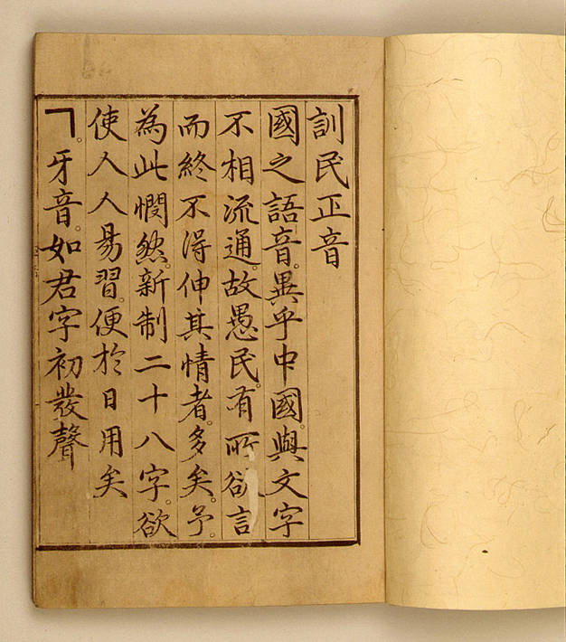
훈민정음 해례본 · 1446년 간행 · 국보 제70호, 간송미술관 소장 · 유네스코 세계기록유산 [Wikimedia · Public Domain]
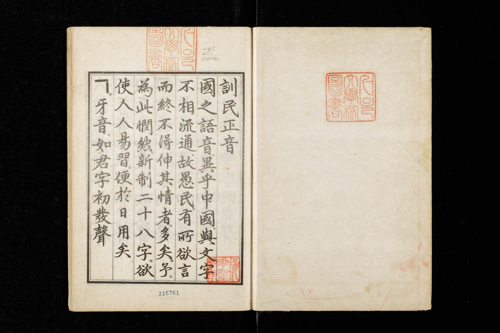
해례본 어제 서문 · 백성을 가엾이 여겨 새 글자를 만든다는 세종의 친제 서문 [Wikimedia · Public Domain]
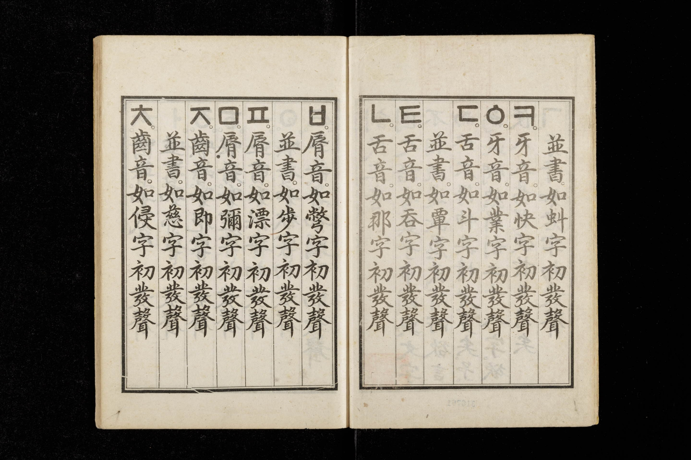
해례본 제자해 · 자음을 발음 기관에서, 모음을 천지인에서 끌어낸 제자 원리의 설명부 [Wikimedia · Public Domain]한글 자모 28자 · 자음 17 + 모음 11 · 소리를 분석해 형태로 옮긴 자질문자 [Wikimedia · Public Domain]
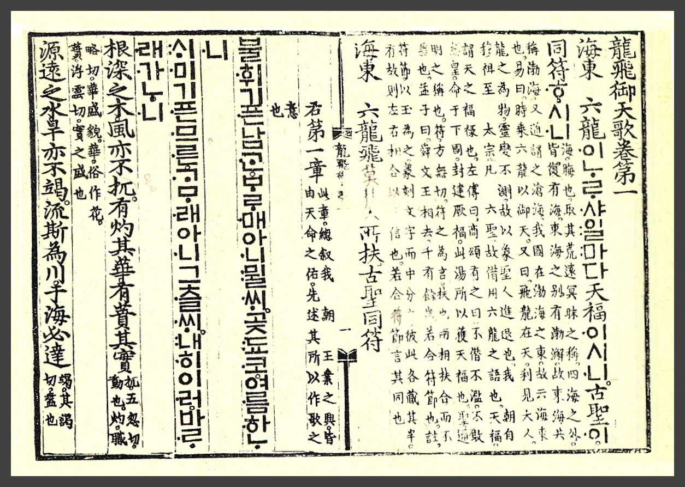
용비어천가 · 1447년 · 훈민정음으로 지은 최초의 책, 조선 왕조의 창업을 노래한 악장 [Wikimedia · Public Domain]
Tabula III · 한 글자가 퍼진 길
1446년 이후, 궁궐의 글자가 백성의 글자가 되기까지
조선 팔도 언문 확산 한자 문명권
반포 직후 한글은 사대부의 외면 속에 더디게 퍼졌다. 그러나 편지로, 소설로, 부녀자의 글로 백성 사이에 스며들어, 마침내 한 나라 모두의 글자가 되었다.
VII
1446 · 한양
최만리의 한 반대 상소
강의 듣기
새 글자에 정면으로 맞선 신하가 있었다. 임금은 분노했으나 그를 죽이지 않았다. 충돌 끝에 두 사람은 각자의 길을 갔고, 그 논쟁 자체가 조선 정치의 한 품격을 증언한다.
새 글자가 모두의 환영을 받은 것은 아니었다. 1444년 2월, 집현전 부제학 최만리를 필두로 신석조·김문·정창손·하위지·송처검·조근 등 일곱 학자가 언문 창제에 반대하는 상소를 올렸다. 흥미롭게도 이들은 세종이 아끼던 집현전의 핵심들이었다. 자신이 키운 학자들이 자신의 필생의 업적을 정면으로 비판한 것이다.
그들의 논리는 나름의 일관성이 있었다. 첫째, 중국과 글자를 같이 쓰는 것이 사대의 도리인데 따로 언문을 만들면 스스로 오랑캐가 되는 것이다. 둘째, 이두는 한자에 바탕을 두어 학문에 도움이 되지만 언문은 한자와 무관하니 성리학 공부를 멀리하게 만들 것이다. 셋째, 형벌 기록의 억울함은 글자가 아니라 옥리의 자질 문제이니 새 글자로 해결될 일이 아니다. 넷째, 이런 중대사를 신하들과 충분히 의논하지 않고 급히 추진했다는 것이다.
세종은 격노했다. 그는 일곱 학자를 친히 불러 따져 물었다. 그 대질의 장면이 『세종실록』에 생생히 남아 있다. 세종은 너희가 운서를 아느냐, 사성과 칠음, 자모가 몇인지 아느냐고 음운학의 전문성을 들어 추궁했다. 특히 형옥의 억울함은 옥리의 문제라는 정창손의 말에 크게 노하여, 백성을 위하는 마음을 모른다고 질책했다.
너희가 이르되, 음을 쓰고 글자를 합하는 것이 모두 옛것에 어긋난다 하나, 설총의 이두도 역시 음이 다르지 아니하냐. 내가 늘그막에 날을 보내기 어려워 서적으로 벗을 삼을 뿐이거늘, 어찌 옛것을 싫어하고 새것을 좋아하여 이러하겠느냐.
세종실록 26년 2월 20일
세종은 정창손을 파직하고, 상소에 참여한 학자들을 의금부에 가두었다. 그러나 그 구금은 단 하룻밤이었다. 이튿날 그는 이들을 모두 풀어 주었다. 임금에게 정면으로 맞선 신하들을 죽이거나 내치지 않은 것이다. 정창손마저 얼마 뒤 복직했다. 학문적 견해의 차이를 정치적 죄로 다스리지 않은 이 절제는, 세종 시대 언로(言路)의 품격을 보여 준다.
최만리는 이 일 후 곧 관직에서 물러나 이듬해 세상을 떠났다. 그를 단순한 수구적 사대주의자로만 보는 것은 온당치 않다. 그의 반대는 당대 사대부가 공유하던 세계관, 곧 한자 문명에 속하는 것이 곧 문명이라는 신념의 정직한 표현이었다. 그는 자기 소신을 끝까지 아뢴 뒤 임금의 결정에 승복했다. 서로 정반대의 자리에 섰으되 상대를 학자로 존중한 임금과 신하의 이 긴장은, 한 시대의 성숙을 증언한다.
이 논쟁을 오늘의 눈으로만 재단해서는 안 된다. 최만리에게 한자는 단순한 외국 글자가 아니라 보편 문명 그 자체였다. 동아시아의 모든 고전과 학문, 외교와 행정이 한자로 이루어지던 시대에, 한자를 떠난다는 것은 문명의 바다에서 스스로 떨어져 나오는 일로 보였다. 그의 두려움에는 나름의 합리가 있었다. 다만 그는 백성 대다수가 그 문명의 바다에 발조차 담그지 못하고 있다는 사실을 보지 못했다. 세종은 보았고, 최만리는 보지 못했다. 두 사람의 차이는 지성의 높낮이가 아니라 시선이 향한 곳의 차이였다.
이 사건은 세종 시대 정치 문화의 한 단면을 보여 준다. 신하가 임금의 필생의 업적을 정면으로 반박하는 상소를 올릴 수 있었고, 임금은 분노하면서도 그를 죽이지 않았으며, 직접 불러 학문으로 논쟁했다. 그리고 하룻밤의 구금 끝에 모두 풀어 주었다. 같은 시대 다른 나라의 절대 군주였다면, 이런 항명은 곧 죽음을 의미했을 것이다. 세종의 조선에서 언로는 살아 있었고, 비판은 처벌이 아니라 토론으로 다루어졌다. 위대한 통치는 반대 의견을 짓밟는 데서가 아니라, 그것을 끝까지 듣고도 옳은 길을 택하는 데서 나온다.
한글의 더딘 확산은 도리어 그 생명력의 시험대였다. 만약 한글이 권력의 명령으로 단숨에 보급되었다면, 그것은 권력이 바뀔 때 함께 흔들렸을 것이다. 그러나 한글은 가장 낮은 곳에서부터 천천히, 그러나 끈질기게 뿌리내렸다. 어머니가 시집간 딸에게 쓰는 편지에서, 아내가 전쟁터의 남편에게 보내는 안부에서, 백성이 즐기는 이야기책에서 한글은 살아 숨 쉬었다. 권력의 인정을 받지 못한 채로도 한글은 이미 백성의 마음을 얻고 있었다. 그것이 세종이 진정 바란 바였다.
최만리의 상소를 다시 읽으면, 그 안에 한 시대의 두 가지 진심이 부딪히고 있음을 보게 된다. 최만리의 진심은 문명의 보존이었다. 그는 어렵게 쌓아 올린 한자 문명의 전통을 지키는 것이 곧 나라의 격을 지키는 일이라 믿었다. 세종의 진심은 백성의 구제였다. 그는 그 문명의 혜택에서 소외된 대다수 백성을 그냥 두고 볼 수 없었다. 어느 쪽도 사사로운 욕심에서 나온 것이 아니었다. 두 진심이 정면으로 충돌했고, 임금은 신하를 죽이는 대신 토론으로 맞섰으며, 결국 자신의 길을 갔다. 위대한 결정은 종종 두 선의 사이에서 더 멀리 내다본 쪽의 손을 들어 주는 일이다.
역설적이게도 한글의 가장 큰 수혜자는 처음에 그것을 외면한 사대부 집안의 여인들이었다. 공식 교육에서 한문을 배울 기회가 없던 여성들은 한글을 통해 비로소 읽고 쓰는 삶을 얻었다. 어머니가 딸에게, 아내가 남편에게 보낸 수많은 한글 편지가 오늘까지 전해져, 우리는 조선 사람들의 일상과 감정을 그들 자신의 글로 읽을 수 있게 되었다. 만약 세종이 한글을 만들지 않았다면, 조선 백성 대다수의 목소리는 역사에서 영원히 침묵했을 것이다. 그가 연 것은 단지 글자가 아니라, 이름 없는 사람들이 역사에 자기 흔적을 남길 통로였다.
세종의 유산을 한마디로 요약하기는 어렵다. 그는 글자를 만든 언어학자였고, 하늘을 측량한 과학 군주였으며, 국경을 그은 전략가였고, 백성의 세금과 형벌과 출산까지 살핀 행정가였다. 이 모든 면모를 관통하는 것은 단 하나, 백성의 삶을 실제로 낫게 하려는 집요한 의지였다. 그는 이상을 말로 그치지 않고 반드시 제도와 도구로 만들어 냈다. 측우기로 농사를, 칠정산으로 시간을, 훈민정음으로 소통을, 공법으로 세금을 다스렸다. 추상적 이상을 구체적 현실로 옮기는 능력, 그것이 그를 단순한 성군을 넘어 위대한 통치자로 만들었다.
오늘 우리가 세종에게서 배울 것은 거창한 영웅담이 아니라 그 구체성의 태도다. 그는 백성을 사랑한다고 말하는 데 그치지 않고, 비의 양을 재는 그릇을 만들고, 글 모르는 이를 위한 글자를 설계하고, 세법을 정하기 전에 십칠만 명의 뜻을 물었다. 사랑은 선언이 아니라 설계라는 것을, 그는 평생으로 보여 주었다. 누군가를 위한다는 말이 진심이려면, 그 말은 반드시 그 사람의 삶을 실제로 바꾸는 구체적인 무언가로 이어져야 한다. 오백 년 전 한 임금이 남긴 이 교훈은, 오늘 우리가 무엇을 만들든 가장 약한 사용자를 먼저 생각하라는 가르침으로 여전히 살아 있다.
세종을 한 시대의 거울로 비추어 보면, 그가 살았던 십오 세기는 동서양이 각기 거대한 전환을 향해 나아가던 때였다. 유럽은 르네상스와 인쇄 혁명, 그리고 곧 대항해 시대로 들어서고 있었고, 동아시아는 명을 중심으로 한 질서 속에서 저마다의 길을 모색하고 있었다. 그 거대한 직물 속에서 조선의 한 임금은, 정복이나 팽창이 아니라 백성의 일상을 낫게 하는 일에 자신의 시대를 바쳤다. 화려한 정복자의 이름이 아니라 한 글자의 발명자로 역사에 남기를 택한 군주, 그것이 세종이 다른 시대의 영웅들과 구별되는 점이다. 그의 위대함은 얼마나 멀리 정복했는가가 아니라, 얼마나 낮은 곳까지 보살폈는가로 측정된다.
지금 이 글을 읽는 당신의 눈앞에 놓인 모든 글자가, 오백 년 전 거의 보이지 않는 눈으로 백성을 가엾이 여긴 한 임금의 손에서 시작되었다. 그가 만든 스물여덟 글자는 왕조의 흥망과 외세의 침탈을 건너, 한 민족이 자기 생각과 감정을 담는 가장 일상적인 그릇이 되었다. 세종이 남긴 가장 깊은 메시지는 어쩌면 단순하다. 권력은 자기를 위해 쓰일 때 잊히고, 가장 약한 자를 위해 쓰일 때 영원히 기억된다. 그가 우리에게 남긴 것은 한 벌의 글자이자, 동시에 권력을 어떻게 써야 하는가에 관한 한 편의 답이었다.
현실에서 한글은 더디게 자리 잡았다. 사대부들은 여전히 한자를 진서(眞書)라 높이고 한글을 언문이라 낮춰 불렀으며, 공식 문서는 오래도록 한문으로 작성되었다. 한글은 주로 부녀자와 평민, 그리고 궁중의 편지에서 쓰여 암클이라 불리기도 했다. 그러나 바로 그 낮은 자리에서 한글은 끈질기게 살아남았다. 편지로, 소설로, 가사로 백성의 삶 속에 스며든 이 글자는, 수백 년의 세월을 건너 끝내 한 민족의 글자가 되었다.
최만리 반대 상소 (1444)
주동최만리 등 집현전 학자 7인
논거 1사대 명분 — 중국과 다른 글
논거 2성리학 학문 소홀 우려
논거 3형옥 문제는 옥리 탓
세종 대응친히 대질·논박
처분하룻밤 구금 후 석방·복직
곁가지 1 — 정창손의 가시 돋친 한마디
대질에서 정창손은 글자가 있어도 백성이 교화되지 않는 것은 사람의 자질 탓이라는 취지로 아뢰었다. 세종이 가장 분노한 대목이었다. 백성을 가엾이 여겨 글자를 만든 임금에게, 백성은 어차피 교화되지 않는다는 말은 정면 도전이었다. 세종은 그를 파직했으나 능력을 아껴 곧 복직시켰다. 훗날 정창손은 세조에 협력하고 사육신을 고변하는 데까지 가담해, 절의 면에서 또 한 번 논란의 인물이 된다.
[Source] 『세종실록』 26년 2월 · 『단종실록』·『세조실록』 · 한국민족문화대백과 '정창손'.
곁가지 2 — 암클이라 불린 글자
반포 후 한글은 사대부 사회에서 격이 낮은 글로 여겨져 언문, 암클, 아햄글이라 불렸다. 그러나 바로 그 비공식성 덕분에 한글은 검열과 격식에서 자유로웠다. 궁중 여인들의 한글 편지, 한글 소설, 제문과 가사가 쏟아졌고, 19세기 『춘향전』과 『홍길동전』 같은 한글 소설은 백성의 가장 사랑받는 읽을거리가 되었다. 위에서 강요한 것이 아니라 아래에서 선택받아 살아남은 글자였다.
[Source] 백두현 『한글 편지로 본 조선시대 선비의 삶』 · 국립한글박물관 전시 자료.
중국 (명)
명은 한자를 유일한 정통 문자로 삼았고, 주변국이 한자를 쓰는 것을 사대의 표지로 여겼다. 최만리의 반대는 이 동아시아 질서를 내면화한 결과였다. 세종은 그 질서 안에 머물면서도 백성의 실용을 위해 새 글자를 밀어붙인 셈이다.
베트남
같은 한자 문명권의 베트남도 한자를 변형한 쯔놈으로 자국어를 적으려 시도했으나, 끝내 한자의 그늘을 벗어나지 못하고 복잡함 속에 머물렀다. 처음부터 새로 설계된 한글의 길과 좋은 대조를 이룬다.
VIII
1450 · 한양
세종의 한 마지막 병
강의 듣기
위대한 임금의 몸은 병으로 무너져 가고 있었다. 그는 거의 보이지 않는 눈으로, 끊임없는 갈증과 통증 속에서, 인류에게 남길 가장 큰 선물을 완성했다. 빛은 어둠 한가운데서 만들어졌다.
세종의 영광 뒤에는 평생을 따라다닌 병이 있었다. 그는 40대 초부터 여러 질병에 시달렸다. 갈증으로 물을 끝없이 들이켜고 소변이 잦았으며, 종기가 끊이지 않았고, 마침내 시력을 거의 잃어 갔다. 후대 의학자들은 이 증상들을 종합해 그가 당뇨병과 그 합병증, 안질, 풍질을 함께 앓았으리라 본다. 『세종실록』에는 그가 신하들에게 자신의 병을 토로하는 기록이 거듭 나온다.
내가 젊어서부터 한쪽 다리가 치우치게 아파서 십여 년에 이르렀고, 또 등에 부종으로 아픈 적이 오래며, 두 눈이 흐릿하고 아파서 봄부터는 음침하고 어두운 곳은 지팡이가 아니고는 걷기에 어려웠다.
세종실록 21년 6월
병의 한 원인은 그의 삶의 방식 자체였다. 그는 하루 대부분을 앉아 책을 읽고 정사를 돌보며 보냈다. 격구나 사냥 같은 운동을 즐기지 않았고, 고기를 좋아해 아버지 태종이 세종의 건강을 염려하는 유언을 남길 정도였다. 학문과 정무에 자신을 갈아 넣는 삶이 그의 몸을 일찍 망가뜨렸다. 그는 만년에 온천을 찾아 요양하고 신하들에게 정사를 위임하려 했으나, 책임감은 그를 좀처럼 쉬게 두지 않았다.
여기에 가장 깊은 역설이 있다. 그가 훈민정음을 창제한 1443년 무렵, 그는 이미 눈이 거의 보이지 않는 상태였다. 글자를 만들고 다듬고 시험한 그 정밀한 작업을, 빛을 잃어 가는 눈으로 해낸 것이다. 인류에게 가장 밝은 빛을 준 글자가, 어둠 속으로 가라앉던 한 사람의 손에서 태어났다. 신체의 한계가 가장 위대한 창조의 한복판에 있었다.
말년의 세종은 가족의 죽음에도 시달렸다. 1446년 평생의 동반자 소헌왕후가 먼저 세상을 떠났다. 깊은 슬픔에 잠긴 세종은 불교에 의지해 그녀의 명복을 빌고자 궁궐 안에 불당을 세우려 했고, 이는 유교 국가의 신하들과 격렬한 갈등을 빚었다. 평생 백성을 위한 일에 단호했던 그가, 아내를 잃은 슬픔 앞에서는 한 사람의 인간으로 흔들렸다.
세종의 만년은 권력을 내려놓는 법을 배우는 시간이기도 했다. 병이 깊어지자 그는 세자(문종)에게 대리청정을 맡겨 국정의 상당 부분을 넘겼다. 신하들은 임금이 정사를 직접 보지 않는 것에 반대했으나, 세종은 자신의 몸 상태를 솔직히 인정하고 후계자를 미리 단련시키는 길을 택했다. 권력에 집착하지 않고 다음 세대를 준비하는 이 태도는, 그가 끝까지 나라를 사람보다 앞에 둔 군주였음을 보여 준다. 비록 그 후계가 비극으로 끝났을지라도, 세종 자신의 판단은 책임 있는 것이었다.
죽음을 앞둔 세종이 무엇을 생각했는지 우리는 알 수 없다. 다만 그가 평생 두려워한 것은 죽음 자체가 아니라 백성을 제대로 돌보지 못하는 것이었음은 분명하다. 가뭄이 들면 자신의 부덕을 탓하며 수라를 줄였고, 죄수의 처지를 헤아려 형벌을 가볍게 했으며, 노비에게도 출산 휴가를 주도록 명했다. 가장 높은 자리에서 가장 낮은 자들을 끊임없이 살핀 한 임금의 생애가, 1450년 봄 조용히 막을 내렸다. 그러나 그가 남긴 글자는 그의 죽음과 함께 끝나지 않았다.
세종의 능에도 그의 면모가 담겨 있다. 묘호 세종(世宗)은 세상에 큰 공을 세운 임금에게 붙는 이름이다. 그의 능인 영릉은 본래 아버지 태종의 헌릉 곁에 있었으나, 풍수상 좋지 않다 하여 후대에 경기도 여주로 옮겨졌다. 능을 여주로 옮긴 뒤 조선 왕조의 국운이 더 연장되었다는 이야기가 전할 만큼 영릉은 명당으로 이름났다. 오늘 여주의 영릉에는 측우기와 해시계, 혼천의의 모형이 함께 전시되어, 과학을 사랑한 임금의 면모를 기린다. 한 임금의 무덤이 그가 평생 사랑한 별과 비와 시간의 기구들로 둘러싸여 있는 것이다.
세종의 죽음 이후 조선은 한동안 격랑에 휩싸였다. 그러나 그가 닦아 놓은 제도와 문화의 기틀은 흔들리지 않았다. 그의 손자 성종 대에 이르러 『경국대전』이 완성되어 조선의 통치 체제가 법으로 굳어졌고, 세종 대에 축적된 학문과 과학의 성과는 조선 오백 년의 자산이 되었다. 한 임금이 한 세대에 쏟아부은 노력이 한 왕조 전체의 토대가 된 것이다. 위대한 통치란 당대를 빛내는 데 그치지 않고, 다음 세대가 딛고 설 단단한 땅을 남기는 일임을, 세종의 치세는 증언한다.
세종의 마지막 십 년을 떠올리면 한 장면이 마음에 남는다. 보이지 않는 눈으로, 끊임없는 통증 속에서, 그는 신하들에게 우리말 소리의 미묘한 차이를 묻고 또 물었다. 한 글자의 획 하나, 한 소리의 높낮이 하나를 놓고 그는 학자들과 밤을 새웠다. 죽음이 가까워 오는 것을 그 자신이 누구보다 잘 알았을 것이다. 그럼에도 그는 끝까지 백성을 위한 일을 손에서 놓지 않았다. 한 인간이 자신의 가장 어두운 시기에 가장 밝은 것을 만들어 냈다는 사실은, 세종이라는 이름 앞에 우리가 끝내 고개를 숙이게 되는 이유다.
1450년 음력 2월(양력 4월 8일), 세종은 막내아들 영응대군의 집에서 쉰넷의 나이로 눈을 감았다. 보위는 맏아들 문종에게 이어졌다. 그러나 병약했던 문종은 2년 만에 세상을 떠났고, 어린 손자 단종이 즉위했다. 그리고 세종의 둘째 아들 수양대군이 계유정난을 일으켜 김종서를 죽이고 조카의 보위를 빼앗아 세조가 되었다. 세종이 아끼던 집현전 학자들과 김종서는 그 격변 속에 스러졌다. 그가 일군 평화의 시대가 그의 아들의 손에 의해 피로 얼룩진 것이다.
한 사람의 가장 큰 유산은 때로 그의 핏줄이 아니라 그의 일에 있다. 세종의 정치적 후계는 비극으로 끝났다. 그러나 그가 만든 스물여덟 글자는 왕조가 무너진 뒤에도, 나라가 식민지가 된 뒤에도 살아남아 오늘 한 민족의 매일의 말이 되었다. 무덤 속의 임금은 사라졌으나, 그가 빚은 글자는 지금 이 문장 속에서 여전히 숨 쉰다.
세종의 만년과 죽음
주요 질환당뇨·안질·풍질·종기
시력 상실40대, 창제 무렵 거의 실명
소헌왕후 승하1446년
승하1450년 4월 8일, 54세
능영릉(英陵), 경기 여주
후계문종 → 단종 → (세조 찬탈)
곁가지 1 — 임금과 신하가 다툰 불당
소헌왕후의 죽음 뒤 세종은 궁궐 안 문소전 곁에 불당을 세우려 했다. 성리학으로 무장한 신하들과 집현전 학자들은 임금의 숭불을 격렬히 반대하며 집단으로 사직을 청하고 동맹 휴학에 들어가기도 했다. 평생 합리와 절제의 군주였던 세종이 이때만은 뜻을 굽히지 않고 불당을 세웠다. 거대한 업적의 임금도 사랑하는 이를 잃은 슬픔 앞에서는 한 인간이었음을 보여 주는 장면이다.
[Source] 『세종실록』 30년 7월 · 한우근 『유교정치와 불교』 · 한국민족문화대백과.
곁가지 2 — 한글로 쓴 부처의 일생
세종은 아내를 추모하며 아들 수양대군에게 부처의 일대기를 짓게 했으니, 그것이 『석보상절』이다. 그리고 그 글을 보고 세종 자신이 부처를 찬양하는 노래 『월인천강지곡』을 지었다. 모두 훈민정음으로 쓰였다. 새로 만든 글자가 가장 먼저 한 일 가운데 하나가, 떠난 아내를 위한 기도였던 셈이다. 글자의 창제와 한 인간의 슬픔이 이렇게 맞닿아 있었다.
[Source] 『석보상절』·『월인천강지곡』 · 국립한글박물관 · 안병희 『국어사 자료 연구』.
유럽
세종이 죽은 1450년대, 유럽에서는 구텐베르크 성서가 인쇄되고(1455년경) 동로마 제국의 수도 콘스탄티노플이 오스만에게 함락된다(1453년). 중세가 저물고 근대의 문턱이 열리던 시기였다.
중국 (명)
1449년 명의 정통제가 몽골 오이라트와의 토목보 전투에서 포로로 잡히는 토목의 변이 일어났다. 동아시아의 패자 명도 북방 유목 세력 앞에 흔들리고 있었다. 그 격동의 한복판에서 조선은 세종이 닦아 놓은 안정 위에 서 있었다.
IX
Alia visione
다른 시선 — 일본, 북한, 유네스코
강의 듣기
한 임금의 한 글자는 한 나라의 경계를 넘어섰다. 적국의 학자도, 분단된 동족도, 세계의 언어학자도 그 앞에서 같은 경탄을 표했다. 그러나 그 평가는 결코 한 가지 빛깔이 아니었다.
세종에 대한 평가는 시대와 입장에 따라 여러 빛깔로 갈라진다. 어떤 이는 그를 백성을 사랑한 성군으로, 어떤 이는 봉건 군주로, 어떤 이는 인류 문자사의 천재로 본다. 한 인물을 한 거울로만 비추지 않고 여러 시선으로 마주할 때, 우리는 비로소 그 입체를 본다. 마지막으로 세종을 둘러싼 여러 시선을 모아 본다.
세종의 사후 운명은 그의 글자만큼이나 굴곡졌다. 조선 후기까지도 한글은 공식 문자의 자리를 얻지 못했다. 사대부는 한문을 고집했고, 한글은 변방의 글로 머물렀다. 한글이 비로소 민족의 글자로 떠오른 것은 역설적으로 나라가 위기에 처한 19세기 말이었다. 1894년 갑오개혁에서 한글은 처음으로 국문(國文)의 지위를 얻었고, 주시경을 비롯한 학자들이 한글을 체계적으로 연구하기 시작했다. 일제 강점기 한글 탄압에 맞서 조선어학회가 목숨 걸고 한글을 지킨 일은, 세종이 뿌린 씨앗이 오백 년 뒤 민족 정체성의 보루가 되었음을 보여 준다.
오늘날 한글은 세종이 상상하지 못한 곳에서까지 빛을 발한다. 디지털 시대에 한글은 컴퓨터와 휴대전화 입력에 가장 효율적인 문자 가운데 하나로 꼽힌다. 자음과 모음을 조합하는 구조가 키보드 입력에 잘 들어맞기 때문이다. 한국이 빠르게 정보화 사회로 진입한 데에는 배우기 쉽고 다루기 쉬운 이 문자의 힘도 있었다. 또한 한류의 확산과 함께 전 세계에서 한국어를 배우는 이들이 늘면서, 한글은 이제 한 민족의 글자를 넘어 세계인이 익히는 문자가 되어 가고 있다. 인도네시아의 한 소수 민족이 자기 언어를 적는 문자로 한글을 채택한 사례까지 있었다.
세종에 대한 우리의 기억도 시대와 함께 자라 왔다. 조선 시대에는 그를 유교적 성군의 전형으로 기렸고, 근대에는 한글 창제자로서의 면모가 부각되었으며, 오늘날에는 과학 군주이자 인재 경영의 모범으로 새롭게 조명된다. 한 인물이 시대마다 다른 빛으로 읽히는 것은, 그가 그만큼 풍부한 면모를 지녔기 때문이다. 만원권 지폐에 그의 얼굴이 새겨지고, 광화문 광장에 그의 동상이 세워지고, 그의 이름을 딴 도시와 함선과 상이 만들어진 것은, 한 민족이 그를 단순한 과거의 인물이 아니라 현재의 길잡이로 삼고 있음을 보여 준다.
세종을 한 시대의 거울로 비추어 보면, 그는 결국 한 가지 질문에 평생 답한 사람이었다. 권력은 무엇을 위해 존재하는가. 그의 답은 분명했다. 가장 낮은 자를 위해서다. 그는 글 모르는 백성을 위해 글자를 만들었고, 농사짓는 백성을 위해 하늘을 측량했으며, 억울한 죄수를 위해 형벌을 가볍게 했고, 해산하는 노비를 위해 휴가를 주었다. 가장 높은 자리에서 가장 낮은 곳을 바라본 이 시선이야말로, 시대와 국경을 넘어 그를 오늘까지 살아 있게 하는 힘이다.
세종을 우리가 끝내 사랑하는 까닭은, 그가 완벽한 인간이어서가 아니다. 그는 병약했고, 아내의 친정이 무너지는 것을 막지 못했으며, 가장 아낀 신하를 끝내 지켜 주지 못했고, 그의 후계는 피의 정변으로 얼룩졌다. 그러나 그는 그 모든 한계 속에서도 한 가지를 끝까지 놓지 않았다. 가장 약한 자를 향한 시선이다. 위대함이란 결함이 없는 상태가 아니라, 결함과 한계 속에서도 옳은 방향을 잃지 않는 끈기임을 그는 보여 주었다. 그래서 그의 이름 앞에는 오늘도 대왕이라는 두 글자가 붙는다. 단지 많은 일을 해서가 아니라, 그 모든 일이 한 사람도 빠짐없이 백성을 향했기 때문이다.
한글은 모든 언어가 꿈꾸는 최고의 알파벳이다.
존 맨, 『알파 베타』 (Alpha Beta, 2000)
① 일본 학자들의 시선
식민 지배국의 학자조차 한글의 과학성을 부정하지 못했다. 20세기 초 일본의 언어학자들은 한글이 자음과 모음을 분명히 나누고 발음 기관을 본떠 만든 정교한 체계임을 인정했다. 식민지 시기 일본은 조선어 교육을 억압하고 한글을 탄압했으나, 학문의 영역에서는 한글의 독창성을 외면할 수 없었다. 가해자의 언어로도 부정할 수 없는 설계의 우수함이 거기 있었다. 정복은 글자를 누를 수 있어도 그 가치를 지울 수는 없다.
[Source] 고영근 『한국 언어학사』 · 국립한글박물관 학술자료.
② 북한의 시선 — 위대한 글자, 봉건 군주
북한도 한글을 민족의 위대한 유산으로 떠받들며 세종을 높이 평가한다. 그러나 사회주의 사관에 따라 그를 봉건 지배계급의 군주로 규정하는 이중적 태도를 보인다. 글자를 만든 업적은 인민적이라 칭송하되, 그가 봉건 착취 체제의 정점이었음을 함께 비판하는 것이다. 같은 인물을 남과 북이 각기 다른 이념의 틀로 해석하는 모습은, 역사 인물이 어떻게 현재의 정치 속에서 다시 쓰이는가를 보여 준다.
[Source] 사회과학원 『조선통사』 · 남북 역사인식 비교 연구.
③ 한자 옹호론의 비판
한국 안에서도 한글 전용을 둘러싼 논쟁은 오래 이어져 왔다. 한자 병용을 주장하는 이들은, 한국어 어휘의 상당 부분이 한자어이며 동음이의어가 많아 한자를 모르면 뜻을 정확히 가리기 어렵다고 본다. 반면 한글 전용론자들은 문맥으로 충분히 구별되며 한글만으로도 모든 표현이 가능하다고 반박한다. 이 논쟁은 세종의 유산을 어떻게 계승할 것인가를 둘러싼 살아 있는 토론으로, 오늘도 교육과 출판의 현장에서 진행 중이다.
[Source] 한글학회·어문정책 논쟁 자료 · 김슬옹 『세종학과 융합 인문학』.
④ 유네스코 세종대왕 문해상
1989년 유네스코는 세종대왕 문해상(King Sejong Literacy Prize)을 제정했다. 세계에서 문맹 퇴치에 크게 기여한 개인이나 단체에 매년 수여하는 이 상은, 한국 정부가 기금을 후원한다. 한 동아시아 군주의 이름이 인류의 문해 운동을 상징하는 국제적 영예의 이름이 된 것이다. 글을 백성에게 돌려주려 한 세종의 정신이, 오백 년을 건너 전 지구적 문해 운동의 깃발이 되었다.
[Source] UNESCO King Sejong Literacy Prize 공식 자료 · 유네스코 한국위원회.
⑤ 세계 언어학계의 평가
현대 언어학은 한글을 거듭 격찬해 왔다. 미국의 한국어학자 로버트 램지는 한글을 인류의 위대한 지적 성취로 꼽았고, 영국의 언어학자 제프리 샘슨은 한글을 소리의 자질을 글자 형태에 반영한 유일한 자질문자로 분류했다. 『총, 균, 쇠』의 저자 재레드 다이아몬드는 한글을 세계에서 가장 합리적인 문자라 평했다. 정작 한국 밖의 학자들이 한글의 가치를 더 분명히 증언한 셈이다. 한 사람의 위업이 고향 밖에서 더 또렷이 보이는 일은 역사에 드물지 않다.
[Source] R. Ramsey, The Korean Language · Jared Diamond, Discover(1994) · G. Sampson, Writing Systems.
⑥ 오늘의 교훈 — 가장 작은 자를 위한 설계
세종의 가장 깊은 가르침은 권력을 무엇에 쓰는가에 있다. 그는 가장 큰 권력을 쥐고도 그 힘을 가장 약한 자, 곧 글을 모르는 백성을 위해 썼다. 위대한 일은 거창한 정복이 아니라 가장 낮은 자의 가장 작은 불편을 자기 일로 끌어안는 데서 시작된다. 오늘 우리가 누군가를 위한 도구를 설계할 때, 그것이 가장 약한 사용자에게도 쉬운가를 묻는다면, 우리는 세종의 정신을 잇는 것이다. 좋은 설계란 결국 가장 작은 자를 위한 배려다.
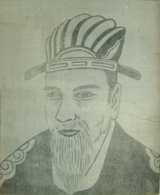
세종대왕 표준 영정 · 운보 김기창 작 (1973년 제작, 1965년 안 기준) · 현행 만원권 도상의 바탕 [Wikimedia · Public Domain]
도판 모음 — Iconographia Sejongiana
백성의 입을 글로 옮긴 한 임금. 그가 남긴 것은 얼굴이 아니라 스물여덟 자였다.
세종 표준 영정 1965 · 운보 김기창 그림 [Wikimedia · Public Domain]